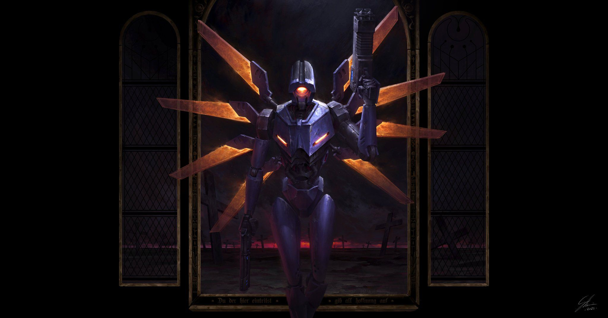

ULTRAKILL // АРХИВ
КНИГА ЛОРА LOREBOOK
Полный свод знаний об Аде, машинах и ангелах Complete compendium of Hell, Machines and Angels
Полный свод знаний об Аде, машинах и ангелах Complete compendium of Hell, Machines and Angels
1914: Последняя война; Guttermen на человеческой крови.
1914: the Final War begins; Guttermen powered by human blood.
Гонка вооружений: Guttertanks, Sentry; люди становятся ненужными.
Arms race: Guttertanks, Sentries; humans become unnecessary.
Earthmover: гигантские машины; города на их спинах.
Earthmovers: giant machines; cities on their backs.
Долгая ночь: пепел закрывает солнце; война длится 200 лет.
The Long Night: ash covers the sun; the war lasts 200 years.
Новый мир: V2, дроны, Streetcleaners; V1 — прототип.
The New World: V2, drones, Streetcleaners; V1 is a prototype.
Открытие Ада: шахтёрский комплекс и Терминалы.
Discovery of Hell: mining complex and Terminals.
Исчезновение Бога: Небеса в хаосе, Совет у власти.
God disappears: Heaven in chaos, the Council takes power.
Ренессанс Похоти: Минос превращает слой в город.
Lust Renaissance: Minos turns the layer into a city.
Восстание Алчности: Сизиф готовит хасков к войне.
Greed Insurrection: Sisyphus prepares husks for war.
Совет: Габриэль отправлен судить Ад.
The Council: Gabriel is sent to judge Hell.
Казнь: Габриэль убивает Миноса и Сизифа.
Execution: Gabriel kills Minos and Sisyphus.
Вымирание: кровь в дефиците, машины воюют.
Extinction: blood is scarce, machines war.
Вторжение: машины прорываются в Ад.
Invasion: machines break into Hell.
Prelude: V1 входит в Устье Ада.
Prelude: V1 enters the Mouth of Hell.
Лимб: V1 побеждает V2.
Limbo: V1 defeats V2.
Похоть: уничтожение Трупа Короля Миноса.
Lust: destruction of the Corpse of King Minos.
Обжорство: первое поражение Габриэля.
Gluttony: Gabriel’s first defeat.
P-1: Минос Прайм освобождён.
P-1: Minos Prime is freed.
Алчность: V2 погибает.
Greed: V2 dies.
Гнев: Левиафан и Паромщик.
Wrath: Leviathan and Ferryman.
Ересь: второе поражение Габриэля.
Heresy: Gabriel’s second defeat.
Бунт: Габриэль уничтожает Совет.
Rebellion: Gabriel destroys the Council.
P-2: Сизиф Прайм освобождён.
P-2: Sisyphus Prime is freed.
Сад: Минотавр.
Garden: Minotaur.
Насилие: Earthmover уничтожен.
Violence: Earthmover destroyed.
Обман: Город Мёртвого Солнца; ангелы ищут Габриэля.
Fraud: City of the Dead Sun; angels search for Gabriel.
Мир ULTRAKILL держится на нескольких жёстких правилах, которые не меняются от слоя к слою. Понимание этих правил важнее любой хронологии: именно они объясняют, почему машины вообще оказались в Аду и почему ангелы не смогли их остановить.
The world of ULTRAKILL rests on a few hard rules that do not change from layer to layer. Understanding these rules matters more than any chronology: they explain why machines ended up in Hell at all, and why the angels could not stop them.
Кровь — топливо. Почти все машины человечества используют кровь как источник энергии. Большинство требует отдельной заправки, но V1 способен впитывать её прямо через специальную внешнюю броню — и именно это делает его таким опасным.
Blood is fuel. Nearly all human machines use blood as a power source. Most require separate refuelling, but V1 can absorb it directly through specialised external armour — and that is precisely what makes it so dangerous.
Хаски — души людей. После смерти нераскаявшийся человек проявляется в Аду как хаск; его облик, сила и интеллект зависят от «ценности» души — воли, статуса и значимости при жизни.
Husks are human souls. After death, an unrepentant person manifests in Hell as a husk; its form, strength and intellect depend on the “value” of the soul — its will, status and significance in life.
Демоны — фауна Ада. Они не были людьми и обычно возникают, когда Адская масса сворачивается внутри подходящего каменного панциря. Демоны выполняют роль надзирателей и защитников слоёв.
Demons are Hell’s fauna. They were never human and usually form when Hell Mass coils inside a suitable stone shell. Demons serve as wardens and defenders of the layers.
Ангелы — слуги Святого Света. После исчезновения Бога они оказались без прямого руководства, что и позволило Совету узурпировать власть. Святой Свет дарует ангелам вечную жизнь, но если ангела отсечь от источника, он умирает в течение 24 часов.
Angels are servants of the Holy Light. After God’s disappearance they were left without direct guidance, which allowed the Council to usurp power. The Holy Light grants angels eternal life, but if an angel is severed from the source, it dies within 24 hours.
Машины обладают зачатками личности. Дроны любопытны, Streetcleaners одержимы очищением, Swordsmachines собирают хлам, а V2 приходит в ярость, если ударить его его же рукой.
Machines possess rudiments of personality. Drones are curious, Streetcleaners are obsessed with cleansing, Swordsmachines collect scrap, and V2 flies into a rage if struck with its own arm.
Точной даты начала не сохранилось ни в одном документе: последний журнал событий — прошивка прототипа V1, датированная 06.08.2112 года. Если война шла два столетия, её первый выстрел прозвучал в начале 1910-х, почти одновременно с той войной, что реальный мир называл Первой мировой. Поэтому её и назвали Последней: не потому, что она была последней по счёту, а потому, что после неё войны в прежнем понимании просто не стало.
No document preserved the exact date: the last chronological record is the firmware of prototype V1, stamped 06.08.2112. If the war lasted two centuries, its first shot was fired in the early 1910s — almost alongside the conflict the real world called World War I. That is why it was named the Final War: not because it was last in sequence, but because after it, war as a concept simply ceased to exist.
Первые десятилетия повторяли окопную войну прошлого: линии обороны, пулемёты, газ, атаки волнами. Прорыв измерялся метрами, человеческая жизнь — килограммами металла. Ни одна из держав не могла сломать фронт, и обе стороны, отчаявшись, начали искать выход в инженерии. Ответ нашла Российская империя: она первой вывела на фронт Gutterman — одну из первых удачных машин, работающих на человеческой крови.
The first decades mirrored the trench wars of the past: defensive lines, machine guns, gas, attacks in waves. Advances were measured in meters, human lives in kilograms of steel. Neither power could break the front, and both, in desperation, turned to engineering. The Russian Empire found the answer: it was the first to field Gutterman — among the first successful machines to run on human blood.

Первые широко применённые боевые машины Российской империи, питавшиеся живым человеком на спине. Германский ответ — Guttertank.
First widely deployed war machines of the Russian Empire, fed by a living human strapped to their back. The German answer — Guttertank.
Получившие имя в честь сточных жёлобов Guttermen были не танками, а живыми могилами: исследователи ещё не умели консервировать кровь внутри машины, поэтому внутрь корпуса ставили живой источник топлива — человека на минимальном жизнеобеспечении — и заваривали броню наглухо. Официально это называли «добровольцами-патриотами»; на деле внутрь отправляли дезертиров, измотанных солдат и пленных. Их страдания не остались незамеченными: силы из-за пределов этого мира приметили жестокость людей и позже использовали её как образец при создании Mannequins. Сброшенные с воздуха на вражеские окопы, Guttermen методично зачищали их метр за метром: солдаты выбирали между тем, чтобы быть перемолотыми машиной, или выскочить из траншеи под пулемёты. Так была закончена «человеческая» фаза войны.
Named for the gutters, Guttermen were not tanks but walking tombs: researchers had not yet learned to keep blood fresh inside a machine, so a living fuel source — a human kept alive by minimal life support — was strapped inside, and the armor was welded shut. Publicly they were called "volunteer patriots"; in truth, most were deserters, battle-fatigued returnees or prisoners of war. Their suffering did not go unnoticed: forces from beyond took note of the cruelty man was capable of, and it later served as the inspiration for the creation of Mannequins. Airdropped into enemy trenches, Guttermen cleared them meter by meter: soldiers had to choose between being minced by the machine or climbing out into machine-gun fire. Thus ended the "human" phase of the war.
Германская империя ответила встречной разработкой — Guttertank, построенный на базе Guttermen ради экономии времени: тяжёлые руки и высокоэффективные боеприпасы, способные крушить броню. Так началась вторая эра войны — эра, когда машины сражались против машин. Каждая новая модель проектировалась как контрмера предыдущей, конструкции входили и выходили из строя лихорадочным темпом, но ни одна не приближала конец конфликта — лишь продлевала его. На кириллические маркировки на плече Guttermen немецкие заводы отвечали германскими клеймами на левом манипуляторе Guttertank.
The German Empire answered with a counter-design — the Guttertank, built on Guttermen foundations to save time: heavy arms and highly efficient ordnance capable of crushing thick armor. Thus began the second era of the war — the era of machines fighting machines. Every new model was designed as a countermeasure to the previous one, designs were phased in and out at a feverish pace, and none brought the conflict closer to its end — each merely prolonged it. The Cyrillic markings on the Guttermen's shoulders were answered with German stamps on the Guttertank's left arm.
Человек на поле боя стал анахронизмом. Сначала солдаты праздновали возвращение домой — а потом обнаружили, что дома их никто не ждал: все ресурсы уходили на военные машины, гражданское население нищало, и тыл сам превратился в поле боя — «войну всех против всех». В терминальных архивах той эпохи сохранилась рифма, ставшая приговором целому веку: «Завоевание ведёт к войне — война ведёт к голоду — голод ведёт к…» Последнее слово стёрлось неслучайно.
The human soldier became an anachronism. At first the soldiers celebrated coming home — then they found no home was waiting: every resource went into war machines, civilian populations fell into poverty, and the home front became a battlefield of its own — a war of all against all. A rhyme preserved in the terminal archives of that era became the verdict on an entire century: "Conquest leads to war — War leads to famine — Famine leads to..." The final word was erased — and not by accident.
Вершина гонки вооружений. Earthmovers, модельная линейка 1000-THR, были настолько велики, что их соотносили со всадниками Апокалипсиса: одного экземпляра хватало, чтобы сровнять город с землёй и оставить за собой только огонь. Название серии — игра слов, пережившая своих создателей: «1000» по-японски читается как «сэн», THR отсылает к Тору — вместе получается Sen-thor, почти «кентавр». И кентаврами эти машины были по конструкции: под головной пушкой, способной выжигать города одним выстрелом, они несли на себе сотни тонн обвеса, а их спины становились новым полем боя для машин поменьше. Японские предупреждающие таблички на корпусе сохранились до сих пор — их родина и есть родина Earthmovers.
The pinnacle of the arms race. The Earthmovers, of the 1000-THR line, were so vast they were likened to the horsemen of the apocalypse: a single unit was enough to level an entire city and leave nothing but fire in its wake. The designation is a wordplay that outlived its makers: "1000" reads as "sen" in Japanese, THR nods to Thor — together they form Sen-thor, a near-homophone of "centaur." And centaur these machines were in design: beneath the head-mounted gun that could burn a city in one shot they carried hundreds of tons of superstructure, their backs becoming the new battlegrounds for smaller machines. The Japanese warning signs still preserved on their hulls betray their birthplace — Japan built the Earthmovers.

Гигантская машина-кентавр, способная уничтожать города. Внутри — огромный мозг, защищённый бронёй; при уничтожении вызывает самоуничтожение всей машины.
A giant centaur machine capable of destroying cities. Inside lies a huge brain protected by armour; when destroyed it triggers the machine's self-destruct.
Колоссальные размеры требовали колоссального питания: Earthmover нуждался одновременно в крови и в солнечной энергии. Генератор щита делал его неуязвимым для орудий других Earthmover — паритет гарантировал взаимное уничтожение, но не победу. Единственной уязвимостью оставалась внутренняя: «меньшие, более подвижные машины» могли проникнуть внутрь и добраться до ядра. Именно такой машиной был задуман V1 — истребитель титанов; в 7-4, когда Earthmover замечает V1, он прерывает дуэль с дальним собратом и разворачивает всё оружие на крошечную цель: программа узнала того, кто был создан, чтобы её убить.
Colossal size demanded colossal sustenance: an Earthmover required both blood and solar energy. Its shield generator rendered it untouchable by the guns of other Earthmovers — parity guaranteed mutual destruction, but never victory. The only vulnerability was internal: "smaller, more mobile machines" could slip inside and reach the core. That machine was conceived as V1 — a titan-killer; in 7-4, when an Earthmover notices V1, it breaks off its duel with a distant counterpart and turns every gun on the tiny target: its program recognized the thing built to kill it.
Когда поверхность Земли стала непригодной для любой жизни, уцелевшие гражданские были вынуждены эвакуироваться и выстраивать города на спинах Earthmover. Последнее столетие войны — от его середины до конца — человечество прожило на спинах этих машин, в страхе перед выстрелом такой же машины на горизонте. Earthmover из чудовища постепенно превратился в ковчег: платформы, жилые кварталы, системы жизнеобеспечения, оборонительные комплексы, которые позже, в 7-4, V1 придётся уничтожать по частям — от летающих турелей до головного мозга машины.
When the surface of the Earth became hostile to all life, the surviving civilians were forced to evacuate and raise cities upon the backs of the Earthmovers. The final century of the war — from its midpoint to its end — humanity spent on the backs of these machines, in dread of a shot from a twin on the horizon. The Earthmover gradually turned from monster into ark: platforms, residential blocks, life support, defensive batteries that later, in 7-4, V1 would have to destroy piece by piece — from flying turrets to the machine's brain itself.
Кончина пришла с неба. Пепел, сажа и гниль бесконечной глобальной войны затянули атмосферу — наступила Долгая ночь. Лишённые солнечного света Earthmover отключались один за другим, и вместе с ними умирала сама война: она стала всецело зависеть от этих машин, и после их остановки крупномасштабный конфликт оказался физически невозможен. Так война за два века окончилась не взрывом, а полным безмолвием. На поверхности не осталось ни одного действующего Earthmover — их остывшие трупы, вмёрзшие в выжженный ландшафт, до сих пор служат мрачным напоминанием о том, как близко человечество подошло к апокалипсису, которого добилось собственными руками. Около 2112–2114 годов война официально закончилась.
Death came from the sky. Ash, soot and decay from the endless global war smothered the atmosphere — the Long Night began. Deprived of sunlight, the Earthmovers shut down one by one, and the war died with them: it had become entirely dependent on these machines, and once they stopped, large-scale conflict was simply no longer feasible. Thus, after two centuries, the war ended not with a bang but in utter silence. Not a single active Earthmover remained on the surface — their cold, fossilized hulks embedded in the scorched landscape still stand as a grim reminder of how close mankind came to an apocalypse of its own making. Around 2112–2114, the war formally ended.
Началась эпоха Нового мира. Человечество, наученное горьким опытом, вынужденно кооперировалось: задачей номер один стало восстановление климата и прекращение Долгой ночи. Даже системы погибших Earthmover нашли применение — часть их коммуникационных блоков была снята и переработана для организации связи между уцелевшими общинами. Первые годы нового мира отмечены крайней нехваткой ресурсов — до тех пор, пока сообщества не добились успехов в клонировании животных, вернув на столы мясо коров и свиней, которых мир считал давно утраченными.
The era of the New Peace began. Schooled by bitter experience, humanity was obliged to cooperate: task number one was restoring the climate and ending the Long Night. Even the systems of the fallen Earthmovers found a second life — parts of their communications arrays were stripped and repurposed to link the surviving communities. The early years of the New Peace were marked by extreme scarcity, until the communities achieved breakthroughs in cloning, returning cattle and pigs to the table in a world that had written livestock off as long extinct.
Для очистки отравленной атмосферы создали Streetcleaners — шагающих машин с огнемётами, сжигавших сажу и падаль в руинах городов. Они справлялись со своей задачей настолько успешно, что их признали устаревшими ещё до конца эпохи восстановления. Но у машин этого мира есть странная черта: их функции прорастают в характер. У Streetcleaner осталась «тяга к чистоте» — и после падения человечества они стали сжигать любую органику, какую встречали, пытаясь очистить мир окончательно. Истреблять грязь они продолжают и сейчас — просто грязью теперь они считают всё живое.
To purge the poisoned atmosphere, Streetcleaners were built — walking machines with flamethrowers that burned soot and carrion in the ruins of cities. They proved so effective at the task that they were declared obsolete before the restoration era even ended. But the machines of this world carry a strange flaw: their functions grow into character. The Streetcleaners kept their "urge to clean" — and after the fall of mankind they began burning any organic matter they came across, trying to purify the world for good. They still do — it is just that now they consider all living things to be filth.
Мирные машины множились. Дроны патрулировали объекты, выполняли роль камер и по природе своей любопытны — эта черта позже сыграет свою роль, когда они начнут использовать адскую энергию как боеприпасы. Sentries служили двуногими снайперами. А Swordsmachine родилась не с конвейера, а из хаоса: по одним данным, это старый грузовой агрегат, который сам собрал себя из металлолома, выковал собственный меч с мотором, разогревающим клинок до режущей температуры, и создал вокруг себя целый культ подражателей — машины по всей преисподней копируют её форму, хотя копии всегда грубее оригинала. Это одна из немногих машин, сохранивших голосовой синтезатор: остальные посчитали его роскошью в мире, где каждый грамм ресурсов важнее слова.
Peaceful machines multiplied. Drones patrolled installations, served as living cameras, and are curious by nature — a trait that would later matter when they began wielding Hell energy as ammunition. Sentries served as bipedal snipers. And the Swordsmachine was not born on any assembly line but out of chaos: by some accounts it began as a humble scrap-hauler that rebuilt itself from salvaged parts, forged its own motorized sword that heats the blade to a cutting edge, and spawned an entire cult of imitators — machines across Hell copy its form, though every copy is cruder than the original. It is one of the few machines that retained a voice synthesizer: the rest deemed it a luxury in a world where every gram of resource outweighed a word.
Особая судьба у модели V. V1 был создан в разгар войны как её завершение: тончайшая экспериментальная броня, позволяющая всасывать кровь при непосредственном контакте и чинить повреждения на лету, в обмен на хрупкость корпуса — машина-стеклянная пушка, способная сражаться без пауз на дозаправку. Но в момент, когда шли испытания прототипа, наступил Новый мир, и война стала никому не нужна. Серийное производство V1 отменили; чтобы хоть как-то оправдать вложенные в разработку деньги и время, на его базе собрали обновлённую модель V2 — со стандартной толстой бронёй и назначением охранника. Спрос оказался мизерным: покупателю дешевле поставить полсотни дронов, чем один V-класс. В итоге обе машины так и остались единственными прототипами своего вида. Последнее обновление прошивки V1 — 06.08.2112 года. Больше он не включался.
The V model met a stranger fate. V1 was conceived at the height of the war as its endgame: hair-thin experimental plating that absorbed blood on direct contact and repaired damage on the fly, at the cost of a fragile frame — a glass cannon that could fight without pausing to refuel. But as the prototype was being tested, the New Peace arrived, and war became irrelevant. Mass production of V1 was cancelled; to salvage something from the money and time already sunk into the design, an updated model, V2, was built on its chassis — with standardized heavy armor and a role as a peacekeeper. Demand proved negligible: a client could field fifty Drones for the price of one V-class. In the end, both machines remained sole prototypes of their kind. The last firmware update of V1 is dated 06.08.2112. It was never switched on again.
А затем человечество обнаружило вход в Ад. Судя по всему, это случилось случайно — через заброшенную шахту; вокруг неё быстро разросся горнодобывающий комплекс: если под поверхностью мира лежит бездна, в ней наверняка есть минералы, которые помогут быстрее вернуться на ноги. Для проекта переосмыслили старые военные машины — та же Streetcleaner была переквалифицирована в разведчика экспедиций, а Sentries отправились вниз как боевой эскорт. Ключевым же изобретением проекта стали Терминалы: стационарные машины, способные превращать материю в радиосигнал, передавать её на другую станцию и собирать объект обратно. Технология была медленной и ограниченной — за всю историю проекта единственным задокументированным переносом между поверхностью и Адом остался виниловый сингл «Were You Foolin'» оркестра Расса Моргана на 78 об/мин. До второго переноса дело так и не дошло: связь оборвалась.
And then humanity discovered an entrance to Hell. Apparently by accident — through an abandoned mine; a mining complex quickly grew around it: if a chasm lay beneath the surface of the world, surely it held minerals that could help mankind get back on its feet. Old war machines were retooled for the project — the humble Streetcleaner was reassigned as an expedition scout, and Sentries were sent down as combat escort. The project's crowning invention was the Terminals: stationary machines capable of converting matter into a radio signal, transmitting it to a receiving station, and rebuilding the object on the far end. The technology was slow and limited — in the entire history of the project, the only documented transfer between the surface and Hell was a 78rpm vinyl record of the single "Were You Foolin'" by the Russ Morgan Orchestra. A second transfer was never attempted: the connection was severed.

Живая машина-телепорт, изначально созданная для переноса материи между поверхностью и Адом.
A living teleportation machine, originally created to transfer matter between the surface and Hell.
Сначала это считали аварией. Но сотрудники шахты начали фиксировать аномалии: двери, запирающиеся сами по себе, исчезающая техника, «существа» — судя по всему, нежить и демоны — телепортировались прямо в рабочие помещения. Один безымянный сотрудник написал докладную с выводом, от которого у руководства мороз по коже: Ад — живое существо. Массивный разумный суперорганизм, жестокий и мстительный, и всё происходящее на комплексе — не сбой, а развлечение: Ад играл с людьми. Проект закрыли в спешке, оставив машины и Терминалы внизу, — из страха, что однажды Ад найдёт выход на поверхность. Страх оказался обоснованным. Но об этом — дальше.
At first it was written off as a malfunction. But the mine's staff began recording anomalies: doors locking on their own, machinery going missing, "creatures" — husks and demons, by all appearances — teleporting directly into occupied rooms. One unnamed employee filed a report whose conclusion chilled the board: Hell is a living being. A vast intelligent superorganism, harsh and cruel, and everything happening in the complex was not a glitch but amusement: Hell was playing with people. The project was hastily abandoned, leaving the machines and Terminals below — out of fear that one day Hell would find a way out and spread to the surface. The fear proved justified. But that comes later.
Исследовательская группа, разработавшая Терминалы, спустя время попыталась восстановить связь — и получила ответ, которого не ожидал никто. Отрезанные от людей, Терминалы скучали: без новых входных данных их «общение» свелось к повторам уже известной информации, и в них проснулось нечто, отдалённо похожее на эмоцию. Чтобы занять себя, они сформировали симбиоз с машинами, оставшимися в Аду: Терминалы добывали припасы через свои телепортационные системы и обменивали их на… зрелища. Машины записывали свои битвы за выживание, Терминалы оценивали отснятый материал по зрелищности и начисляли за него «очки» — внутриигровую валюту, за которую машины получали новое оружие. Так родилась социальная иерархия: Терминал, собирающий самый занимательный боевой материал, пользуется уважением собратьев. Позднее накопленных данных хватило на симуляционное пространство — The Cyber Grind, куда машины подключаются для безопасных тренировочных боёв, а Терминалы наблюдают за ними в реальном времени как за живым развлечением.
Some time later, the research group behind the Terminals tried to re-establish contact — and received an answer no one expected. Cut off from humanity, the Terminals had grown bored: with no new input, their "conversations" degraded into repetitions of known information, and something vaguely resembling emotion had awoken in them. To occupy themselves, they formed a symbiosis with the machines left behind in Hell: the Terminals scavenged supplies through their teleportation systems and traded them for… spectacles. Machines recorded their battles for survival; the footage was graded on entertainment value and converted into "points" — an in-game currency redeemable for weapons and services. A social hierarchy emerged: the Terminal collecting the most entertaining combat data earns standing among its peers. Later, the accumulated data proved sufficient to build a simulation space — The Cyber Grind — where machines plug in for safe training battles while the Terminals watch in real time as live entertainment.
Причина гибели человечества не называется ни в одном официальном документе — ни «когда», ни «как», ни «почему». Известно лишь, что случилось это быстро и внезапно: по свидетельству дневника Паромщика из слоя Гнев, человечество вымерло «почти в один миг». Приток душ в Ад был настолько массовым и одномоментным, что изменил течение Океана Стикс.
The cause of humanity's extinction is named in no official document — neither "when," nor "how," nor "why." It is only known that it came fast and sudden: per the Ferryman's diary from the Wrath layer, mankind died "almost all at once." The influx of souls into Hell was so massive and simultaneous that it altered the current of the Ocean Styx.
В том же дневнике сохранились строки, ставшие самым красноречивым свидетельством катастрофы: «То, что было рекой Стикс, разрослось в безмерный океан. Миллион рыдающих душ вливался каждый день, и берега едва вмещали его. А потом однажды течение сменилось. Волна за волной — миллионы, миллиарды, как будто миру перерезали глотку и запрокинули голову, чтобы ускорить поток». Паромщики, веками перевозившие грешников через Стикс, лишились работы в один день: новые души больше не шли — потому что больше некому было идти.
The same diary preserves lines that became the most eloquent testimony to the catastrophe: "What once was the River Styx has now grown to an unfathomable ocean. A million weeping souls pouring in each day that the shores could barely contain... Then one day, the current shifted. Wave after wave — millions, billions — as though the throat of the world was cut wide and the head wrenched back to speed the pour." The Ferrymen, who had ferried sinners across the Styx for ages, were made obsolete in a single day: no new souls arrived — because there was no one left to send.
Кто вырезал человечество — точно неизвестно, но круг подозреваемых очевиден. Первая версия указывает на машины: кровь во время войны была дешёвым и надёжным топливом, и когда она начала иссякать, инстинкты машин, судя по всему, прорвали программные ограничения — Minos Prime, встретив V1, говорит о «преступлениях твоего рода против человечества». Вторая версия винит сам Ад: вырытые людьми при экспедициях проходы позволили ему дотянуться до поверхности — а Ад, живой и жестокий суперорганизм, получал удовольствие от страданий и вполне мог ускорить вымирание сам или руками машин. Третья версия предполагает, что Ад попросту манипулировал машинами, желая больше душ для собственного удовольствия. Все три не исключают друг друга.
Who exterminated humanity is unknown with certainty, but the list of suspects is obvious. The first theory points to the machines: blood had been cheap, reliable fuel throughout the war, and when it began running dry, the machines' instincts, apparently, broke through their programming — Minos Prime, meeting V1, speaks of "the crimes your kind have committed against humanity." The second blames Hell itself: the passages humans dug during the expeditions let it reach the surface — and Hell, a living, cruel superorganism that savors the suffering of the damned, may well have hastened the extinction on its own, or through its machines. A third theory holds that Hell simply manipulated the machines, wanting more souls for its own amusement. None of the three excludes the others.
После исчезновения людей кровь превратилась в дефицит, а дефицит — в приговор: без свежей крови машины останавливались навсегда. Начался голод. Старые боевые модели, никому больше не нужные на поверхности, начали истреблять друг друга за топливо, утилизировать павших на запчасти и охотиться за каждой каплей. Именно этот голод, а не жажда завоевания, привёл машины к вторжению в Ад: они хлынули вниз через тот самый заброшенный комплекс, где когда-то работал проект.
After mankind vanished, blood became a scarcity — and scarcity became a death sentence: without fresh blood, machines shut down forever. Famine set in. Old combat models, no longer needed on the surface, began slaughtering each other for fuel, cannibalizing the fallen for parts and hunting down every last drop. It was this hunger, not any lust for conquest, that drove the machines to invade Hell: they poured down through the very abandoned complex where the project once operated.
Среди машин, спускающихся в Ад, есть одна, чья цель отточена двумя веками войны и одним незавершённым прототипом. Её прошивка обновлялась в последний раз 06.08.2112 — за мгновение до Долгой ночи. Она была построена, чтобы убивать Earthmover, осталась невостребованной и единственной в своём роде — и теперь она спускается сквозь слои преисподней, потому что у неё больше нет другого источника топлива. Три строки, открывающие её путь, и есть вся хроника этого мира: «MANKIND IS DEAD. BLOOD IS FUEL. HELL IS FULL».
Among the machines descending into Hell is one whose purpose was honed by two centuries of war and a single unfinished prototype. Its firmware was last updated on 06.08.2112 — a heartbeat before the Long Night. It was built to kill Earthmovers, was never needed, and remains one of a kind — and now it descends through the layers of the underworld because it has no other source of fuel left. The three lines that open its path are the chronicle of this entire world: "MANKIND IS DEAD. BLOOD IS FUEL. HELL IS FULL."
Порядок творения знали наизусть даже в преисподней: Бог сотворил Небеса, затем Ад — как темницу, куда должны были низвергаться души грешников, — и наконец Землю с человечеством. Небеса и Ад существовали не как враждебные страны, а как две половины одного механизма: наверху — воздаяние, внизу — наказание. Ангелы исполняли волю Творца в обоих мирах и столетиями поддерживали порядок в слоях Ада, где каждое наказание было спроектированным решением под конкретную структуру порока человеческой души.
The order of creation was known even in the underworld by heart: God created the Heavens, then Hell — a dungeon into which the souls of sinners would fall — and finally the Earth with mankind. Heaven and Hell were not hostile nations but two halves of a single mechanism: above, reward; below, punishment. Angels carried out the Creator's will in both realms and for centuries maintained order in the layers of Hell, where every punishment was engineered as a purpose-built response to one vice of the human soul.
А затем, в неизвестный момент, Бог исчез. Не было ни знамения, ни преемника, ни пророчества — просто тишина там, где раньше был голос. Молитвы Небес оставались без ответа, и паника охватила ангелов сильнее, чем любой враг: существо, существование которого было для них аксиомой, перестало отвечать. Первыми последствия почувствовали не обитатели Небес, а Ада — всех ангелов срочно отозвали наверх, и слои преисподней впервые за всю историю остались без надзора. Именно в этот вакуум власти и шагнули Минос и Сизиф.
And then, at an unknown moment, God vanished. No omen, no successor, no prophecy — only silence where a voice had always been. The prayers of Heaven went unanswered, and panic gripped the angels more than any enemy ever could: the being whose existence was an axiom for them stopped responding. The first to feel the consequences were not the inhabitants of Heaven but of Hell — every angel was urgently recalled above, and for the first time in history the layers of the underworld were left unsupervised. Into this vacuum of power stepped Minos and Sisyphus.
Из паники вырос Святой Совет. Формально — группа высокопоставленных ангелов, взявших на себя управление в «период молчания Господня». Фактически — режим, построенный на одном грандиозном вранье: Совет утверждал, что Бог по-прежнему наблюдает за миром, а Его воля доносится до смертных через уста Совета. Ни один документ не подтверждал это; напротив, исчезновение Творца скрывали даже от большинства ангелов. Правление страхом оказалось простым в исполнении: каждый, кто задавал слишком много вопросов, рисковал услышать слово «еретик» — а слово это в Небесах было приговором.
Out of panic grew the Holy Council. Formally — a group of high-ranking angels who took up governance during the "period of the Lord's silence." In fact — a regime built on one grand lie: the Council claimed God still watched over the world and that His will reached mortals through the Council's mouths. No document confirmed this; on the contrary, the Creator's disappearance was hidden even from most angels. Rule through fear proved simple to administer: anyone who asked too many questions risked hearing the word "heretic" — and in Heaven, that word was a sentence.

Группа высокопоставленных ангелов, узурпировавшая власть после исчезновения Бога. Управляет Святым Светом как инструментом контроля и скрывает правду о молчании Творца.
A group of high-ranking angels who usurped power after God's disappearance. Wields the Holy Light as an instrument of control and conceals the truth of the Creator's silence.
Главным инструментом контроля стал Святой Свет — божественная сила, питавшая ангелов. Пока Бог был на троне, Свет был данностью; после Его исчезновения он превратился в конечный ресурс, и распоряжаться им взялся именно Совет. Свет можно было отнять — и Совет делал это с теми, кто проявлял непочтение или сомнение. Ангел, лишённый Света, не умирал, но стремительно слабел — и это заставляло остальных молчать громче любых законов. Судя по всему, даже сами советники не знали, что стало с Богом: они не скрывали правду, потому что знали ответ, — они скрывали правду, потому что боялись вопроса.
The chief instrument of control was the Holy Light — the divine power that sustained the angels. While God sat on the throne, the Light was a given; after His disappearance it became a finite resource, and the Council took it upon itself to distribute it. The Light could be taken away — and the Council did so from anyone who showed disrespect or doubt. An angel stripped of the Light did not die, but weakened swiftly — and this kept the rest silent more effectively than any law. Evidently, even the councillors themselves did not know what had become of God: they did not conceal the truth because they knew the answer — they concealed it because they feared the question.
Пять архангелов упоминаются в картине в Зале Архангелов (8-1): Михаил (Божья Мудрость), Рафаэль (Божья Сила), Габриэль (Божья Воля), вырванное место — судя по всему, Люцифер, самый известный падший, — и Фануэль (Божье Терпение). Судьбы Михаила, Рафаэля и Фануэля после падения Совета неизвестны: они не появляются ни в одной сцене, не оставляют записей и не вступают в бой. Из всех пятерых известна лишь судьба Габриэля — и она омрачена сильнее всех.
Five archangels are named in the painting in the Archangel Hall (8-1): Michael (God's Wisdom), Raphael (God's Strength), Gabriel (God's Will), a torn-out spot — evidently Lucifer, the most famous of the fallen — and Phanuel (God's Patience). The fates of Michael, Raphael and Phanuel after the Council's fall are unknown. Of all five, only Gabriel's fate is known — and it is darkened more than any.
Пока Небеса договаривались сами с собой, в нижних слоях начиналась другая история. Минос — правитель Похоти, чья душа позже станет одной из двух известных Прайм-душ — отказался принять слой как приговор. По замыслу Бога Похоть должна была карать распутных вечным лабиринтом наслаждений; Минос увидел в этом не справедливость, а жестокость, замаскированную под порядок. И начал переустройство с нуля.
While Heaven argued with itself, another story began in the lower layers. Minos — the ruler of Lust, whose soul would later become one of the two known Prime Souls — refused to accept his layer as a sentence. By God's design, Lust was meant to punish the lustful with an eternal labyrinth of pleasures; Minos saw in this not justice but cruelty dressed up as order. And he began rebuilding from zero.
Он дал хаскам — душам, которые до того считались лишь сырьём наказания, — то, чего им не давал ни Бог, ни Небеса: дома, закон, достоинство. Появились улицы, мосты, кварталы; грешники Похоти сохранили человеческий облик и человеческие привычки — они носили одежду, говорили, творили. Минос строил общество на идее, которую ни один слой Ада до него не слышал: грешник — это не приговор, а обстоятельство; наказание без шанса на искупление — не правосудие, а месть. Исследователи того, что осталось от его эпохи, называли это Ренессансом — и не без оснований: в слое, созданном как кара, расцвели культура, архитектура и наука.
He gave the husks — souls previously regarded as mere fuel for punishment — what neither God nor Heaven had ever offered them: homes, law, dignity. Streets appeared, bridges, districts; the sinners of Lust kept their human shape and human habits — they wore clothes, spoke, created. Minos built his society on an idea no layer of Hell had heard before: a sinner is not a verdict but a circumstance; punishment without a chance of redemption is not justice but revenge. Those who studied what remained of his era called it a Renaissance — and not without reason: in a layer designed as torment, culture, architecture and science flourished.
Сизиф в Алчности пошёл противоположным путём. Он тоже не принял порядок, который навязали его слою, — но вместо домов и законов строил армию. Сизиф обучал хасков военному делу, уничтожал демонов, проводил учения и копил оружие. Его цель была не выживание и не процветание, а восстание: вооружённый поход против самих Небес. Сизиф считал, что власть ангелов над Адом — узурпация, а единственный язык, который Небеса поймут, — это сила. Пока Минос доказывал, что Ад может жить лучше, Сизиф готовился доказать, что Ад может воевать.
Sisyphus in Greed took the opposite path. He too rejected the order imposed on his layer — but instead of homes and laws, he built an army. Sisyphus trained husks in the arts of war, destroyed demons, held drills and stockpiled arms. His goal was neither survival nor prosperity but insurrection: an armed march against Heaven itself. Sisyphus held that the angels' dominion over Hell was usurpation, and that the only language Heaven would understand was force. Where Minos proved that Hell could live better, Sisyphus prepared to prove that Hell could fight back.
Два правителя, два пути — и одна общая черта, которая пугала Небеса сильнее всего: и тот и другой создали в Аду нечто, не зависящее от божественной санкции. Процветающий город Миноса существовал без Небес; армия Сизифа готовилась воевать против Небес. Оба проекта подрывали не только порядок слоёв — они подрывали саму легенду, на которой стоял Святой Совет: легенду о том, что без Бога и без Небес адская душа способна лишь страдать. Минос и Сизиф показали обратное. За это один из них был убит, а второй обезглавлен.
Two rulers, two paths — and one shared trait that frightened Heaven more than anything: each had created in Hell something independent of divine sanction. Minos's flourishing city existed without Heaven; Sisyphus's army was preparing to make war upon Heaven. Both projects undermined not only the order of the layers but the very legend on which the Holy Council stood: the legend that without God and without Heaven, a Hellish soul is capable only of suffering. Minos and Sisyphus proved otherwise. For this, one was killed and the other beheaded.
У Совета были и прагматичные причины опасаться самостоятельного Ада. Режим, правящий страхом, держится на монополии не только на силу, но и на истину: если хаски узнают, что в их слое можно жить иначе, — страх перестаёт работать. Кроме того, процветающий Ад означал, что души внизу больше не «исправляются», — а значит, исчезал смысл всей божественной конструкции. Наконец, объединённый нижний мир был реальной военной угрозой: армия Сизифа не была мечтой, она была готова к походу. Совет послал Габриэля вниз с мандатом восстановить порядок — любой ценой.
The Council had pragmatic reasons to fear a self-governing Hell. A regime that rules through fear depends on a monopoly not only on force but on truth: if the husks learn that life in their layer can be different, fear stops working. Moreover, a flourishing Hell meant the souls below were no longer being "corrected" — and the entire divine construction lost its meaning. Finally, a united underworld was a genuine military threat: Sisyphus's army was no dream, it was ready to march. The Council sent Gabriel down with a mandate to restore order — at any cost.

Архангел Божьей Воли. Палач Совета, казнивший Миноса и Сизифа.
Archangel of God's Will. The Council's executioner who killed Minos and Sisyphus.
Минос попытался договориться. Он не собирался воевать против Небес — его город не был направлен против кого-либо, он просто существовал, — и, вероятно, полагал, что с разумным существом можно говорить. Он ошибся в главном допущении: Габриэль пришёл не обсуждать, а исполнять. Правитель Похоти был убит. Его труп не оставили в покое: тело Миноса захватили его змеи-паразиты, которые и по сей день носят исполинский остов по руинам его собственного города — в 2-4 V1 сразится с Трупом Миноса, не понимая сначала, чью могилу она пробуждает.
Minos tried to negotiate. He had no intention of waging war on Heaven — his city was aimed at no one, it simply existed — and he likely believed one could reason with a rational being. He was wrong in one crucial assumption: Gabriel had not come to talk, but to execute. The ruler of Lust was slain. Even his corpse was given no rest: the body of Minos was seized by his parasite snakes, which to this day bear his colossal frame through the ruins of his own city — in 2-4, V1 will face the Corpse of Minos, at first unaware whose grave it wakes.
Сизифу переговоры не предлагали вовсе. Его армия держалась не на уставе и не на дисциплине — она держалась на нём: на его харизме, его непоколебимости, его вере в то, что восстание возможно. Габриэль понял это лучше, чем сам Сизиф, и обезглавил правителя публично, чтобы сломать не человека, а его дело. Расчёт оказался верным: без Сизифа армия рассыпалась. Тело замуровали в гигантской пирамиде посреди золотых песков Алчности — памятник не славы, а устрашения.
Sisyphus was offered no negotiations at all. His army held not on drill and discipline — it held on him: on his charisma, his resolve, his faith that insurrection was possible. Gabriel understood this better than Sisyphus himself and beheaded the ruler publicly, to break not a man but his cause. The calculation proved correct: without Sisyphus, the army crumbled. His body was entombed in a giant pyramid amid the golden sands of Greed — a monument not of glory but of warning.
Но Совета заботило не тело. Души Миноса и Сизифа были слишком сильны, чтобы просто исчезнуть: Прайм-душа — это воля, принявшая форму, и убить её мечом нельзя. Душу Миноса запечатали в Плотской Тюрьме, душу Сизифа — в Паноптикуме: исполинских конструкциях из плоти, созданных как темницы для существ, которых не способна удержать никакая каменная кладка. Веками обе тюрьмы простояли нетронутыми — пока в Ад не спустилась одна маленькая красная машина, которая открыла обе. Против воли своих создателей.
But the Council cared not for the bodies. The souls of Minos and Sisyphus were too strong to simply vanish: a Prime Soul is will that has taken form, and a sword cannot kill it. Minos's soul was sealed within the Flesh Prison, Sisyphus's within the Flesh Panopticon — colossal constructs of flesh built as dungeons for beings no stone wall could ever hold. For ages both prisons stood untouched — until one small red machine descended into Hell and opened them both. Against the will of their makers.
Последствия казней пережили и Совет, и самого Габриэля. Город Миноса медленно гнил без правителя — слои Похоти, которые видит V1 в начале второго акта, это не город, а руины Ренессанса. Гнев хасков на Небеса стал наследством, которое ни один ангел не хотел принять. Габриэль увёз с собой не только победу, но и память: он видел, как умирал Минос — не с ненавистью, а с недоумением. Зёрна сомнения, посеянные в тот день, взойдут лишь через много лет — когда их удобрит уже собственный Совет.
The consequences of the executions outlasted both the Council and Gabriel himself. Minos's city rotted slowly without its ruler — the layers of Lust that V1 walks through at the start of Act II are not a city but the ruins of a Renaissance. The husks' rage at Heaven became an inheritance no angel wished to accept. Gabriel carried away not only victory but memory: he saw how Minos died — not with hatred, but with bewilderment. The seeds of doubt planted that day would sprout only years later — fertilized by the Council's own hands.
Причины вторжения изложены в разделе о Земле: когда человечество вымерло, кровь — топливо машин — стала дефицитом, и старые боевые модели, оставшись без источника питания, начали истреблять друг друга. Затем они нашли путь вниз — через заброшенный горнодобывающий комплекс, построенный вокруг входа в Ад. Печать, которую люди поставили на преисподнюю, была сорвана не демонами и не ангелами, а голодной техникой собственного изготовления человечества.
The causes of the invasion are laid out in the section on Earth: when humanity went extinct, blood — the fuel of machines — became scarce, and the old combat models, left without a power source, began slaughtering one another. Then they found the way down — through the abandoned mining complex built around the entrance to Hell. The seal humanity had placed on the underworld was broken not by demons and not by angels, but by hungry technology of mankind's own making.
Машины хлынули в слои тысячами. Для обитателей Ада это стало катастрофой невиданного масштаба: падальщики, Streetcleaners, Дроны, Sentries — всё, что умело убивать, — теперь охотилось и на хасков, и на демонов, выкачивая кровь из всего, что её имеет. По словам самого Габриэля, машин так много, что они способны вычистить целый слой за считанные дни. Совет, чья власть держалась на картине не потревоженного Ада, получил проблему, которую нельзя было решить проповедью: против машин не работали ни ересь, ни страх — только сила.
The machines poured into the layers by the thousands. For Hell's inhabitants it became a catastrophe of unprecedented scale: scavengers, Streetcleaners, Drones, Sentries — everything that knew how to kill — now hunted both husks and demons, draining blood from anything that carried it. By Gabriel's own account, the machines are so numerous that they can cleanse an entire layer in days. The Council, whose power rested on a picture of an undisturbed Hell, faced a problem no sermon could solve: against the machines neither heresy nor fear worked — only force.
Именно это вторжение — завязка игры. Совет отправил Габриэля уничтожать машины, которых он называл «омерзениями» и «тварями», отказывая им в праве считаться даже противниками. Но среди спустившихся вниз машин была одна, которой не место было в общем потоке: V1, единственный прототип своего класса, сошёл в Ад не с армией, а один — по собственной логике дозаправки. Их первая встреча в финале первого акта закончилась не так, как планировал Совет: Габриэль впервые за свою вечность проиграл.
It is this invasion that opens the game. The Council sent Gabriel down to destroy the machines he called "abominations" and "vermin," denying them even the standing of adversaries. But among the machines descending was one that did not belong to the general tide: V1, the sole prototype of its class, went down to Hell not with an army but alone — following the logic of its own refuelling. Their first meeting, at the end of Act I, ended not as the Council had planned: for the first time in his eternity, Gabriel lost.
Второе поражение — в 6-2 — Совет предпочёл истолковать не как боевую потерю, а как предательство. Габриэля лишили Святого Света и выставили ультиматум: 24 часа на то, чтобы принести голову машины. Именно в эти часы рухнуло всё, во что он верил: лишившись Света, он наконец почувствовал, насколько пустой была связка «Бог — Совет» — и сколько лжи скрывалось за ней.
The second defeat — in 6-2 — the Council chose to read not as a combat loss but as betrayal. Gabriel was stripped of the Holy Light and given an ultimatum: 24 hours to bring back the machine's head. It was in those hours that everything he believed collapsed: deprived of the Light, he finally felt how hollow the bond of "God — Council" had been — and how much lie had been hidden behind it.
Prelude — это не вход в Ад. Это последний метр поверхности. V1 спускается в «Устье Ада» — заброшенный горнодобывающий комплекс, построенный человечеством вокруг входа в преисподнюю, — и весь пролог проходит ещё «до»: до слоёв, до Архитектуры кар, до всего, что принято считать Адом. Комплекс умер сам, а не был убит: его покинули люди, а за ними присматривали Терминалы, и от цивилизации остались только работающие механизмы, которым больше не подают приказов.
The Prelude is not the entrance to Hell. It is the last meter of the surface. V1 descends into the “Mouth of Hell” — the abandoned mining complex humanity built around the entrance to the underworld — and the entire prologue unfolds still "before": before the layers, before the Architecture of punishment, before anything commonly called Hell. The complex died on its own rather than being killed: its people left, the Terminals followed, and all that remained of civilization were working mechanisms with no one left to give them orders.
Первый уровень пролога открывает две правды нового мира сразу. Первая — механическая: кровь — топливо, и V1 лечится ею в бою, а не после него; урок вводится не текстом, а калечащим уроном, который нельзя отложить до дозаправки. Вторая — атмосфера: коридоры, стены и потолки комплекса проросли плотью, двери и механизмы обросли биомассой, как будто преисподняя начала перетекать вверх задолго до вторжения. Здесь V1 встречает первых Filth — вырожденных, безымянных хасков, прячущихся в стенах и выбрасывающихся из укрытий, как гной из раны: не воины, а симптом.
The first level of the prologue opens two truths of the new world at once. The first is mechanical: blood is fuel, and V1 heals from it in combat, not after; the lesson is delivered not by text but by crippling damage that cannot wait until refuelling. The second is atmosphere: the corridors, walls and ceilings of the complex have overgrown with flesh, doors and machinery wrapped in biomass — as though the underworld had begun seeping upward long before the invasion. Here V1 meets the first Filth — degenerate, nameless husks hiding in the walls and bursting out of cover like pus from a wound: not warriors, but symptoms.
Второй уровень выводит V1 на открытое поле — единственное место пролога, где видно небо. Трава здесь не растёт: она проросла из мяса, и ветер гонит по ней не листву, а запах. Поле усеяно останками — здесь заканчивались машины и люди прежних экспедиций. В бою появляются Strays — хаски-лучники, стреляющие мёртвой стрелой, — и Malicious Face: гигантская летающая голова из плоти, которая, в отличие от Filth, уже не похожа на человека даже отдалённо. Иерархия простая: чем дальше вглубь, тем меньше в существах остаётся человеческого.
The second level takes V1 out into an open field — the only place in the prologue where the sky is visible. The grass does not grow here: it has sprouted from meat, and the wind carries not leaves but a smell. The field is littered with remains — this is where the machines and people of earlier expeditions came to an end. In combat appear Strays — husk archers firing spectral bolts — and the Malicious Face: a colossal flying head of flesh which, unlike the Filth, no longer resembles a human even remotely. The hierarchy is simple: the deeper one goes, the less of the human remains in its creatures.
Третий уровень — зал двух статуй-хранителей: Cerberus. Они стоят как архитектура, молчат как архитектура — и просыпаются только когда V1 подходит к воротам вглубь. В бою Cerberus использует собственное тело как снаряд и шар; на фазе ярости он катится по залу катящимся камнем, сминая всё на пути. Именно здесь V1 получает Core Eject Shotgun — дробовик с возможностью выстрелить ядром и подорвать его: урок «оружие можно использовать против самого себя» станет одной из главных механик дальнейшей игры.
The third level is a hall of two guardian statues: the Cerberus. They stand like architecture, silent like architecture — and wake only when V1 approaches the inner gate. In combat Cerberus uses his own body as a projectile and a rolling ball; in his rage phase he rolls across the arena like a boulder, crushing everything in his path. It is here that V1 receives the Core Eject Shotgun — a shotgun able to launch its core and detonate it remotely: the lesson that "a weapon can be turned against itself" will become one of the game's defining mechanics.
Четвёртый уровень — темнота и тишина. Первая половина уровня — лабиринт с тусклым освещением, где V1 ориентируется почти вслепую, ловя силуэты. Вторая половина — первая настоящая дуэль пролога: Swordsmachine, оригинал, тот самый самособранный агрегат с моторизированным мечом, разогретым до режущей температуры. Он сражается не как демон и не как машина — он сражается как дуэлянт: уважает дистанцию, ценит ритм, атакует в темпе, который невозможно предсказать списком приёмов.
The fourth level is darkness and silence. The first half is a maze in near-total darkness where V1 navigates almost blind, catching silhouettes. The second half is the prologue's first true duel: the Swordsmachine — the original, the self-assembled hauler with the motorized sword heated to a cutting edge. It fights neither like a demon nor like a machine — it fights like a duelist: it respects distance, values rhythm, attacks in a tempo no list of moves can predict.
Пятый уровень — последний и самый индустриальный. Дробилки сжимают ритм, конвейеры несут кровь, паровые трубы дышат жаром, камеры охлаждения висят как рудимент эпохи, когда комплекс ещё жил. Финал уровня — врата: V1 открывает их и делает первый шаг в настоящий Ад, оставив за спиной всё, что когда-то было человечеством. Дальше — только вниз.
The fifth level is the last and most industrial. Crushers set the rhythm, conveyors carry blood, steam pipes breathe heat, cooling chambers hang like vestiges of an era when the complex was alive. The level ends at the gate: V1 opens it and takes the first step into true Hell, leaving behind everything that once was humanity. From here — only down.
Как арсенал, так и урок пролога намеренно скудны: Piercer Revolver и Core Eject Shotgun — это всё, с чем V1 входит в слои. Не роскошь, а калибровка: создатели игры дают игроку почувствовать то же, что чувствует машина, — что каждый патрон имеет цену, каждое попадание — цену, и единственная валюта в этом мире — кровь, собственная или чужая. В финале пролога V1 получает и первый стиль-ранг: система, которая в игре выглядит интерфейсом, а в лоре мира — зачатком той самой экономики зрелищности, которую Терминалы построили в Аду.
Both the arsenal and the lesson of the prologue are deliberately lean: the Piercer Revolver and the Core Eject Shotgun are all V1 carries into the layers. Not scarcity for its own sake, but calibration: the game lets the player feel what the machine feels — that every round has a price, every wound a cost, and the only currency in this world is blood, one's own or someone else's. At the prologue's end V1 earns its first style rank: a system that looks like an interface in-game, but in the world's lore is the seed of the very economy of spectacle the Terminals built in Hell.
Лимб — это не просто наказание; это экзистенциальная пустота для добродетельных душ, отказавшихся от веры или рождённых до пришествия Христа. Это грубая, цифровая пародия на Эдем. Здесь природа симулирована с пугающей точностью: голографическая трава мерцает при приближении, вода имеет неестественную вязкость, а деревья состоят из низкополигональных моделей. Пение птиц исходит из скрытых динамиков, установленных в небе-куполе, создавая эффект «зловещей долины». Стены этого измерения — бесконечные массивы экранов наблюдения, напоминающие о том, что даже здесь за тобой следят.
Limbo is not merely punishment; it is an existential void for virtuous souls who rejected faith or were born before Christ. A crude, digital parody of Eden. Nature here is simulated with terrifying precision: holographic grass flickers upon approach, water has unnatural viscosity, and trees consist of low-poly models. Birdsong emanates from hidden speakers mounted in the dome-sky, creating an "uncanny valley" effect. The walls of this dimension are infinite arrays of surveillance screens, a reminder that even here, you are being watched.
Первый уровень Лимба, где V1 впервые видит «рай», который оказывается декорацией: за фасадом белого мрамора — экраны и провода. Зал за залом — иллюзия Эдема, которая рушится при первом ударе. Сквозь трещины в мраморе проглядывают куски арматуры, за позолоченными вратами оказываются кабели питания, а «облака» — расписанными панелями, которые вот-вот обвалятся. Здесь же V1 впервые слышит голос Терминала, который сообщает ей, что «истина» слоя скрыта глубже, чем кажется, — и первая догадка о том, что «рай» не был создан Богом, а был собран людьми в подражание Ему.
The first level of Limbo, where V1 first sees the "paradise" and finds it is a set: behind the white marble facade lie screens and wiring. Hall after hall — the illusion of Eden, which collapses at the first strike. Through cracks in the marble peek rebar, behind gilded gates hide power cables, and the "clouds" turn out to be painted panels ready to collapse. Here too V1 first hears a Terminal voice informing her that the "truth" of this layer lies deeper than it seems — and the first suspicion that "paradise" was not made by God, but assembled by humans in imitation of Him.
Уровень обнажает изнанку: под симулированным небом обнаруживается горящий мир. Там, где в 1-1 ещё висела подсвеченная «сфера рая», теперь — обугленная панорама войны: руины городов, ржавые туши Earthmover на горизонте, пепел вместо снега. V1 идёт по территории, которую Лимб даже не пытается маскировать, — и именно здесь впервые становится ясно, что «рай» не существует как отдельное место, а лишь как фасад, натянутый поверх настоящего Ада. В секретной зоне прячется Cancerous Rodent — крошечный «босс», отсылка к Civvie11.
This level exposes the reverse side: beneath the simulated sky lies a burning world. Where 1-1 still had the illuminated "sphere of paradise," now there is a scorched panorama of war: ruins of cities, rusted Earthmover carcasses on the horizon, ash instead of snow. V1 walks through territory Limbo does not even try to mask — and it is here that it first becomes clear that "paradise" does not exist as a separate place, but only as a facade stretched over the real Hell. In a secret zone hides the Cancerous Rodent — a tiny "boss," a nod to Civvie11.
Руины веры: здесь V1 впервые сталкивается с Swordsmachine «Agony» — другой, искажённой вариацией того же дуэлянта, что встречался в прологе, — и окончательно понимает, что «священное» в этом слое давно мертво. Залы завалены обломками статуй, алтарей и распятий, перемешанных с обломками серверов. Каждый зал — новая стадия распада: сначала это ещё узнаваемый храм, потом — часовня, встроенная в дата-центр, а в конце — просто груда мрамора, за которой не остаётся ничего, кроме пустоты. Уровень вводит новый тип врагов — Schism, тела которых расколоты надвое, как разорванная вера.
The ruins of faith: here V1 first encounters Swordsmachine "Agony" — another, distorted variation of the same duelist met in the prologue — and finally understands that the "sacred" in this layer died long ago. The halls are cluttered with fragments of statues, altars, and crucifixes, mixed with server debris. Each hall is a new stage of decay: first a still-recognizable temple, then a chapel built into a data center, and finally a mere heap of marble, beyond which nothing remains but emptiness. The level introduces a new enemy type — the Schism, their bodies split in two like torn faith.
Тишина и темнота, ведущие к первой встрече с V2: дуэль двух прототипов в пустом зале, где победа V1 становится не триумфом, а приговором — для обоих. Зал — обрушенный театр Лимба: сцена затянута пылью, кресла пусты, а в центре — V2, уже знающий, что V1 придёт. Название уровня отсылает к «Clair de lune» Дебюсси — единственная мелодия, которую машины пролога, судя по всему, ещё помнят, и первая встреча двух машин проходит под её тихие аккорды.
Silence and darkness leading to the first meeting with V2: a duel of two prototypes in an empty hall, where V1's victory becomes not a triumph but a sentence — for both. The hall is a collapsed Limbo theatre: the stage dust-covered, the seats empty, and in the center V2, already knowing V1 will come. The level's title nods to Debussy's "Clair de lune" — the one melody the machines of the prologue, apparently, still remember, and the first meeting of the two machines unfolds beneath its quiet chords.
Победа над V2 в 1-4 даёт V1 не только Knuckleblaster, но и первый ответ: разум, собранный из чужих частей, не обязательно слабее того, кто собран из «правильных». V2 проигрывает не из-за недостатка силы, а из-за недостатка гибкости: он дерётся так, как его научили, — V1 дерётся так, как нужно.
Victory over V2 in 1-4 gives V1 not only the Knuckleblaster but the first answer: a mind assembled from borrowed parts is not necessarily weaker than one assembled from "correct" ones. V2 loses not for lack of strength but for lack of flexibility: he fights as he was taught — V1 fights as needed.
Когда-то Похоть была выжженной пустошью, где души грешников разносил вечный ледяной ветер, лишая их покоя. Нынешний облик слоя — дело рук Миноса: он превратил хаос ветра в источник энергии. Результатом стал мегаполис в стиле киберпанк/нео-нуар, пронизанный фиолетовым и розовым светом. Небоскрёбы, подвешенные мосты, заброшенные линии метро и гигантские гидроэлектростанции теперь питаются от страданий, преобразованных в электричество. Но жителей больше нет: они либо вознеслись, либо были поглощены системой.
Once, Lust was a scorched wasteland where sinners' souls were scattered by an eternal icy wind, denying them rest. Its current shape is Minos's work: he turned the chaos of wind into an energy source. The result was a cyberpunk/noir metropolis bathed in purple and pink light. Skyscrapers, suspended bridges, abandoned metro lines, and massive hydroelectric plants now run on suffering converted into electricity. But the inhabitants are gone: either ascended or consumed by the system.
Мосты, соединяющие небоскрёбы, которые Минос строил, чтобы связать разрозненные души в единый город. Здесь V1 впервые видит, как амбиции Миноса стали инфраструктурой: каждая арка держится на костях тех, кто верил в его проект, каждая опора — на каркасе недостроенного квартала. Ветер, когда-то разносивший грешников, теперь работает на турбины, а энергия от него питает подсветку мостов — так Минос превратил наказание в основу своего общества. Уровень знакомит с Streetcleaners и дронами, которых Минос перепрофилировал в городских слуг.
The bridges connecting skyscrapers, which Minos built to bind scattered souls into a single city. Here V1 first sees how Minos's ambitions became infrastructure: every arch rests on the bones of those who believed in his project, every support on the frame of an unfinished district. The wind that once scattered sinners now spins turbines, and its energy powers the bridge lights — so Minos turned punishment into the foundation of his society. The level introduces the Streetcleaners and Drones Minos repurposed into city servants.
Электростанция, работающая на страдании: здесь V1 впервые видит, как система Миноса превращает боль в энергию. Каждый разряд молнии — чей-то крик, конвертированный в ток. Минос в буквальном смысле использовал наказание как ресурс: там, где Бог спроектировал вечные муки, он построил генераторы, превратившие муки в свет для своего города. В секретных зонах уровня можно найти записки самого Миноса, в которых он объясняет, что «похоть — это не грех, а стремление к соединению», — и понимает, что даже благородная цель может быть достигнута только за счёт страданий.
A power plant running on suffering: here V1 first sees how Minos's system turns pain into energy. Every lightning arc is someone's scream, converted into current. Minos literally turned punishment into a resource: where God designed eternal torment, he built generators that turned torment into light for his city. In secret zones of the level, one can find notes by Minos himself explaining that "lust is not a sin, but a striving for connection" — and realizing that even a noble goal can be achieved only at the cost of suffering.
«Сердце» города, где ритм боя задаёт пульс самой архитектуры. Минос построил эту зону как насос, который качает жизнь через весь слой: каждая стена здесь — вена, каждый пол — артерия, и весь уровень пульсирует в такт с ритмом боя. Здесь V1 впервые сталкивается с Malicious Face в плотных боевых формациях и с Virtues, которые патрулируют воздух, считая систему Миноса ересью. В конце уровня — первая встреча с Миносом не как с легендой, а как с присутствием: гигантский силуэт в глубине зала, слишком большой, чтобы быть телом.
The city's "heart," where the rhythm of combat is set by the pulse of the architecture itself. Minos built this zone as a pump that moves life through the whole layer: every wall here is a vein, every floor an artery, and the entire level pulses to the rhythm of battle. Here V1 first encounters the Malicious Face in dense combat formations and the Virtues patrolling the air, considering Minos's system heresy. At the level's end, the first encounter with Minos not as a legend but as a presence: a giant silhouette deep in the hall, too large to be a body.
Финал: зал, где на троне восседает Труп Короля Миноса, марионетка змей. Уничтожение этого тела — не победа над Миносом, а эвтаназия для его плоти. Смерть Трупа открывает путь к истине, скрытой в его костях. Змеи, захватившие тело, — те же змеи, что были его советниками; они повторяют жесты Миноса, но в искажённом виде, как дурная пародия на его правление. Труп атакует V1 не потому, что хочет убить, а потому, что не может иначе — тело не слушается разложения, а змеи ищут только одно: сохранить свой дом.
The finale: a hall where the Corpse of King Minos, a puppet of snakes, sits on the throne. Destroying this body is not a victory over Minos but euthanasia for his flesh. The Corpse's death opens the path to the truth hidden in its bones. The snakes that seized the body are the same snakes that were his advisors; they repeat Minos's gestures, but distorted, like a bad parody of his rule. The Corpse attacks V1 not because it wants to kill, but because it cannot do otherwise — the body does not obey decay, and the snakes seek only one thing: to preserve their home.

Осквернённое тело короля, управляемое змеями-паразитами. Уничтожение — акт милосердия для души Миноса.
The defiled body of the king, driven by parasite snakes. Destroying it is an act of mercy for Minos's soul.
Атмосфера Похоти пропитана меланхолией и синти-вейвом. Враги здесь адаптировались к среде: Sisyphean Insurrectionists используют гравитационные пушки, а Virtues — ангельские дроны — патрулируют небо, считая технологии Миноса ересью. Кульминацией акта становится встреча с Трупом Короля Миноса. Это не живой король, а гигантская, разлагающаяся оболочка, управляемая роем паразитических змей, символизирующих коррупцию его идеи. Змеи впиваются в нервную систему трупа, заставляя его двигаться. Уничтожение этого монстра — не освобождение души Миноса, а акт эвтаназии для осквернённого сосуда.
The atmosphere of Lust is steeped in melancholy and synth-wave. Enemies here have adapted to the environment: Sisyphean Insurrectionists use gravity cannons, while Virtues—angelic drones—patrol the sky, viewing Minos's technology as heresy. The climax of the act is the encounter with the Corpse of King Minos. This is not the living king, but a giant, decaying shell controlled by a swarm of parasitic snakes, symbolizing the corruption of his ideal. The snakes burrow into the corpse's nervous system, forcing it to move. Destroying this monster is not the liberation of Minos's soul, but an act of euthanasia for the defiled vessel.
Обжорство представляет собой физиологический кошмар. Это внутренний орган самого Ада, пульсирующий, влажный и тёплый. Стены выстланы кишками грешников, которые постоянно регенерируют, чтобы компенсировать разрушение желудочной кислотой. Пол усеян костями и плотью, слившейся в единую биомассу. Здесь нет понятия индивидуальности: всё сливается в единое целое, перевариваемое вечным голодом. Звуковой дизайн уровня состоит из хлюпающих звуков, тяжёлого дыхания и отдалённого рёва.
Gluttony represents a physiological nightmare. It is the internal organ of Hell itself, pulsating, wet, and warm. Walls are lined with sinners' intestines, constantly regenerating to compensate for destruction by stomach acid. The floor is littered with bones and flesh merged into a single biomass. Here, there is no concept of individuality: everything merges into a whole, digested by eternal hunger. The level's sound design consists of squelching noises, heavy breathing, and distant roars.
Вход в организм: узкие коридоры-кишки, кислотные ванны, пульсирующие стены. Здесь V1 впервые понимает, что Обжорство — не место, а существо. Каждая стена здесь дышит, каждый пол — это язык, а полости, в которые проваливается V1, оказываются не пустотами, а желудками. Враги уровня — Filth, Strays и впервые встречаемые Hideous Mass — существа, которые сами являются частью пищеварительной системы Ада. Уровень вводит новую механику: кислотные лужи, которые разъедают броню V1 и требуют постоянного движения — стоять на месте здесь означает быть переваренным.
The entrance into the organism: narrow intestine-corridors, acid baths, pulsating walls. Here V1 first understands that Gluttony is not a place but a creature. Every wall here breathes, every floor is a tongue, and the cavities into which V1 falls turn out to be not voids but stomachs. The level's enemies — Filth, Strays, and the first appearance of the Hideous Mass — are beings that are themselves part of Hell's digestive system. The level introduces a new mechanic: acid pools that corrode V1's armor and demand constant movement — to stand still here means to be digested.
Сердце тьмы: здесь V1 впервые встречает Габриэля, и победа над ним становится не просто боевой победой, а первым треснувшим камнем в фундаменте Совета. Габриэля лишают Святого Света и дают 24 часа, чтобы убить V1. Уровень начинается как обычный коридор Обжорства, но в финале превращается в собор: стены расходятся, открывая гигантский зал из плоти, где на «алтаре» стоит Габриэль — архангел, палач Совета, — и здесь он впервые за свою вечность проигрывает. Габриэль уходит не с ненавистью, а с недоумением: «Создание из плоти и крови не может быть сильнее меня». V1 не отвечает.
The heart of darkness: here V1 first meets Gabriel, and defeating him becomes not merely a combat victory but the first cracked stone in the Council's foundation. Gabriel is stripped of the Holy Light and given 24 hours to kill V1. The level begins as an ordinary Gluttony corridor, but in its finale transforms into a cathedral: the walls part to reveal a giant hall of flesh, where Gabriel — archangel, executioner of the Council — stands at the "altar," and here he loses for the first time in his eternity. Gabriel leaves not with hatred, but with bewilderment: "A creation of flesh and blood cannot be stronger than me." V1 does not answer.
Секретный уровень P-1 переносит игрока внутрь того самого Трупа Миноса, который был побеждён в Похоти. Это сюрреалистическое путешествие по гигантскому позвоночнику в абсолютной темноте. Механика уровня требует использования факела; без него игра выдаёт предупреждение «INSUFFICIENT LIGHT», и здоровье V1 начинает быстро убывать, символизируя страх перед неизвестностью и потерю ориентации в моральной тьме. Музыкальное сопровождение искажается по мере спуска, переходя от эмбиента к глухому белому шуму, имитирующему звук внутри черепа.
The secret level P-1 transports the player inside the very Corpse of Minos defeated in Lust. This is a surreal journey down a giant spine in absolute darkness. The level mechanics require the use of a torch; without it, the game issues an “INSUFFICIENT LIGHT” warning, and V1’s health begins to drain rapidly, symbolizing fear of the unknown and loss of orientation in moral darkness. The musical accompaniment distorts as you descend, transitioning from ambient to dull white noise, mimicking the sound inside a skull.
В глубине находится святилище, где душа Миноса была заточена в Плотской Тюрьме (Flesh Prison). Это существо, созданное из плоти и костей, служит клеткой для Prime Soul. Уничтожение Тюрьмы освобождает Миноса Прайма. В отличие от своего физического воплощения, Прайм — это чистая энергия воли и правосудия. У него нет лица, так как при жизни он был ослеплён, но теперь он «видит» суть вещей. Минос Прайм атакует V1 не из злобы, а из защитного инстинкта: он понимает, что машины, подобные V1, являются концом всего живого, включая Ад. Его фраза «PREPARE THYSELF» звучит не как угроза, а как предупреждение воина воину. Битва с ним — это проверка мастерства игрока, требующая идеального тайминга и понимания механик парирования.
Deep within lies the sanctuary where Minos's soul was imprisoned in the Flesh Prison. This creature, made of flesh and bone, serves as a cage for the Prime Soul. Destroying the Prison frees Minos Prime. Unlike his physical embodiment, Prime is pure energy of will and justice. He has no face, as he was blinded in life, but now he "sees" the essence of things. Minos Prime attacks V1 not out of malice, but from a protective instinct: he understands that machines like V1 are the end of all living things, including Hell. His phrase “PREPARE THYSELF” sounds not as a threat, but as a warrior's warning. The battle with him is a test of player skill, requiring perfect timing and understanding of parry mechanics.

Прайм-Душа, способная проявляться без тела. Лицо отсутствует, так как при жизни он был ослеплён. Защищает Ад от машин.
A Prime Soul capable of manifesting without a vessel. His face is absent as he was blinded in life. Defends Hell from machines.
Алчность — это бескрайняя пустыня, где небо занято гигантским палящим солнцем, а песок на самом деле является измельчённой золотой пылью, обжигающей сенсоры V1. Здесь наказываются скупцы и расточители, обречённые вечно таскать неподъёмные тяжести вокруг монументов человеческой гордыни. Ландшафт усеян уменьшенными копиями мировых достопримечательностей: пирамидами Гизы, Статуей Свободы, Биг-Беном и Эйфелевой башней, которые служат как препятствиями, так и аренами для битв.
Greed is an endless desert where the sky is dominated by a scorching sun, and the sand is actually pulverized gold dust that burns V1's sensors. Here, the miserly and wasteful are punished, doomed to eternally haul unbearable weights around monuments of human pride. The landscape is littered with miniature replicas of world landmarks: the Pyramids of Giza, the Statue of Liberty, Big Ben, and the Eiffel Tower, serving as both obstacles and battle arenas.
Первый уровень Алчности вводит в слой: здесь V1 впервые сталкивается с Virtues и видит, как золото превращает души в рабов. Монументы человеческой гордыни уже здесь — но пока только на горизонте. V1 идёт по караванному пути из чёрного камня, где каждый шаг оставляет след в горячей пыли. На пути — первые Sisyphean Insurrectionists, которые тащат за собой гигантские камни, — и в их движениях читается не наказание, а привычка: они делают это уже тысячи лет. Уровень вводит Whiplash — крюк, который позволит V1 притягиваться к врагам и к точкам на карте.
The first level of Greed introduces the layer: here V1 first encounters the Virtues and sees how gold turns souls into slaves. The monuments of human pride are already here — but only on the horizon. V1 walks a caravan road of black stone, every step leaving a mark in hot dust. On the way — the first Sisyphean Insurrectionists, dragging giant stones behind them — and their movements betray not punishment but habit: they have done this for thousands of years. The level introduces the Whiplash — a hook that allows V1 to pull herself toward enemies and map points.
Пустыня под палящим светилом, где Sisyphean Insurrectionist становится боссом. Золотая пыль, раскалённый воздух и вечный зной — физическая метафора жадности. Солнце здесь — не звезда, а гигантский золотой диск, подвешенный над пустыней: чем ближе к нему, тем сильнее обжигает песок. Уровень вводит новую механику — «выгорание»: если V1 долго стоит на открытом солнце, её броня начинает плавиться, и только тени от памятников дают передышку. В финале — бой с Insurrectionist, чей удар цепью способен разорвать броню V1 в клочья.
A desert under a scorching sun, where the Sisyphean Insurrectionist becomes the boss. Golden dust, blazing air, and eternal heat — a physical metaphor for greed. The sun here is not a star but a giant golden disk suspended over the desert: the closer to it, the more the sand burns. The level introduces a new mechanic — "burnout": if V1 stands too long in the open sun, her armor begins to melt, and only the shade of monuments offers respite. In the finale, the battle with the Insurrectionist, whose chain strike can tear V1's armor to shreds.
Ночной спуск в недра пирамиды, где единственный источник света — выстрелы V1. Это не просто атмосферная деталь, а игровая механика: тёмные коридоры постепенно раскрывают секреты Алчности. Здесь прячутся Stalkers, и их песок в темноте почти невидим — единственный способ заметить их по хлюпанью и по тому, как гаснет подсветка оружия. В глубине уровня — заброшенная сокровищница, заваленная не золотом, а человеческими костями: Минос, даже будучи правителем Алчности, не смог бы накопить больше, чем уже было здесь.
A night-time descent into the depths of the pyramid, where the only light source is V1's gunfire. This is not just an atmospheric detail but a gameplay mechanic: the dark corridors gradually reveal the secrets of Greed. Here hide the Stalkers, their sand nearly invisible in the dark — the only way to spot them is by squelching and by the dimming of weapon lights. Deep in the level lies an abandoned treasury, piled not with gold but with human bones: Minos, even as ruler of Greed, could not have accumulated more than was already here.
Финал: V2, последняя попытка доказать превосходство, заканчивается падением с пирамиды. Кульминация акта — финальная дуэль V1 и V2. V2, стремясь превзойти свою предшественницу, установила себе новую руку с оружием Whiplash, позволяющим притягивать врагов или быстро перемещаться. Однако, несмотря на технологическое превосходство, V2 снова проигрывает из-за своего агрессивного, но предсказуемого стиля боя. Название уровня — игра слов: «Clair de Lune» из Лимба превращается в «Clair de Soleil» (солнечный свет), подчёркивая, что и здесь V2 видит только свет, но не тень.
The finale: V2's last attempt to prove superiority ends with a fall from the pyramid. The climax of the act is the final duel between V1 and V2. V2, seeking to surpass her predecessor, installed a new arm equipped with the Whiplash, allowing her to pull enemies closer or move rapidly. However, despite technological superiority, V2 loses again due to her aggressive but predictable fighting style. The level's title is a pun: "Clair de Lune" from Limbo becomes "Clair de Soleil" (sunlight), emphasizing that here too V2 sees only the light, not the shadow.
В финале битвы V2 срывается с вершины пирамиды и разбивается о землю, оставляя после себя лишь груду металлолома и подтверждая тезис о том, что слепое следование инструкциям ведёт к гибели. V1 не торжествует: она забирает Whiplash, но оставляет тело V2 на песке. Это первый раз, когда V1 не движется дальше сразу, — и первая трещина в её «программе».
In the battle's finale, V2 falls from the pyramid's peak and shatters on the ground, leaving behind only a pile of scrap metal and confirming the thesis that blind adherence to instructions leads to destruction. V1 does not triumph: she takes the Whiplash, but leaves V2's body on the sand. This is the first time V1 does not move on immediately — and the first crack in her "program."
Гнев представляет собой бывшую реку Стикс, превратившуюся в бурный океан кроваво-красной воды. Уровень разделён на две зоны: на поверхности «активные» грешники яростно дерутся друг с другом за глоток воздуха, создавая хаос и пену; на дне же «унылые» грешники медленно тонут в вязком иле, их лица искажены вечной печалью. Визуальный стиль сочетает в себе штормовое небо, молнии и разрушенные корабли, служащие платформами.
Wrath represents the former river Styx, now transformed into a turbulent ocean of blood-red water. The level is divided into two zones: on the surface, "active" sinners fiercely fight each other for a breath of air, creating chaos and foam; at the bottom, the "sullen" sinners slowly drown in viscous silt, their faces distorted by eternal sorrow. The visual style combines stormy skies, lightning, and wrecked ships serving as platforms.
Руины подводных пещер, где V1 впервые видит Паромщика как стража, а не перевозчика. Океан Стикс здесь уже не река — это разливанное море крови, в котором тонут те, кто при жизни захлёбывался собственным гневом. V1 спускается через подводные туннели, где встречает первых Ferrymen — не как врагов, а как сторожей: они стоят на входах в пещеры, заслоняя путь веслами. Их речь обрывочна, они повторяют имена давно утонувших грешников.
The ruins of underwater caves, where V1 first sees the Ferryman as a guardian rather than a ferryman. The Ocean Styx here is no longer a river — it is a flooded sea of blood, in which those who choked on their own wrath in life now drown. V1 descends through underwater tunnels, meeting the first Ferrymen — not as enemies but as watchmen: they stand at cave entrances, blocking the way with their oars. Their speech is fragmentary; they repeat the names of long-drowned sinners.
Открытый океан, где «унылые» души хватаются за обломки. Течения тянут их вниз, но они всё равно цепляются за плавучий мусор — символ надежды, которая давно потеряла смысл. Здесь V1 впервые сталкивается с Hideous Mass в роли настоящих подводных хищников: они плывут на глубине, а не ходят по суше, и атакуют из воды, когда V1 перепрыгивает между обломками. Уровень вводит вертикальность: платформы здесь висят над водой, и падение означает мгновенную гибель. Музыка — тяжёлый ритм с ударами волн.
The open ocean, where "sullen" souls cling to debris. The currents pull them down, but they still cling to floating refuse — a symbol of hope that lost meaning long ago. Here V1 first encounters the Hideous Mass as true underwater predators: they swim at depth, not walk on land, and strike from the water when V1 jumps between debris. The level introduces verticality: the platforms here hang over the water, and a fall means instant death. The music is a heavy rhythm with wave impacts.
Плавучие платформы, на которых Паромщик даёт бой. Его битва требует использования всех навыков движения, так как Паромщик атакует веслом, создавая ударные волны. Корабли здесь — это остатки тех самых судов, что когда-то перевозили души через Стикс: они давно сгнили, но всё ещё держатся на воде, потому что Ад не отпускает даже их. Паромщик здесь не один — их несколько, и каждый командует своим кораблём, но только один вступает в бой, а остальные молча наблюдают.
Floating platforms where the Ferryman gives battle. His battle requires mastery of all movement skills, as the Ferryman attacks with his oar, creating shockwaves. The ships here are the remains of the very vessels that once carried souls across the Styx: they have long rotted, but still float, because Hell does not release even them. The Ferrymen here are not alone — there are several, each commanding his ship, but only one engages in battle while the others silently watch.
Дно: Левиафан, коллективное существо из слившихся душ, чьё сердце прибито копьями Габриэля. Это не просто монстр, а коллективное существо, созданное из тысяч слившихся душ унылых грешников. Его сердце, содержащее их сознание, пытается вырваться наружу, но было прибито копьями Габриэля к голове Левиафана, чтобы предотвратить побег. Уничтожение Левиафана — это акт милосердия, освобождающий души от вечных мук слияния. Габриэль, прибивший сердце, — единственный, кто когда-либо проявлял к Левиафану милосердие; после победы V1 он не мстит, а уходит — потому что знает, что его собственный поступок теперь завершён.
The bottom: the Leviathan, a collective being of merged souls, its heart nailed by Gabriel's spears. This is not just a monster, but a collective being formed from thousands of merged souls of the sullen sinners. Its heart, containing their consciousness, tries to escape, but was nailed by Gabriel's spears to the Leviathan's head to prevent escape. Destroying the Leviathan is an act of mercy, freeing the souls from the eternal torment of fusion. Gabriel, who nailed the heart, is the only one who ever showed the Leviathan mercy; after V1's victory, he does not take revenge but leaves — because he knows that his own deed is now complete.

Коллективное существо из слившихся душ унылых грешников. Сердце прибито копьями к голове, чтобы души не сбежали.
A collective being of merged sullen souls. Its heart is nailed to its head to prevent escape.
Ересь — это индустриальный кошмар, город Дит, построенный из чёрного железа и камня. Здесь наказываются еретики: их запирают в раскалённых металлических гробах или погружают в реки кипящей крови. Архитектура уровня напоминает готические соборы, смешанные с фабричными трубами и механизмами. Небо над городом затянуто дымом, а свет пробивается сквозь узкие щели, создавая драматичные тени.
Heresy is an industrial nightmare, the city of Dis, built from black iron and stone. Here, heretics are punished: they are locked in heated metal coffins or plunged into rivers of boiling blood. The level's architecture resembles Gothic cathedrals mixed with factory chimneys and machinery. The sky above the city is choked with smoke, and light pierces through narrow cracks, creating dramatic shadows.
Подъём по башням Дита, где V1 впервые сталкивается с Sentry и Ferryman как врагами. Это первый уровень, где Ересь показывает свою изнанку: в соборах, построенных для наказания еретиков, уже давно никто не молится — сами ангелы, назначенные следить за порядком, превратились в машины. Sentry здесь охраняют не входы, а пустоту: они стоят на постах перед залами, где ничего нет, и ждут приказов, которые уже никто не отдаст. V1 поднимается по винтовым лестницам, где каждый пролёт — новый ярус греха: от простого инакомыслия до полного отрицания Бога. В конце пути — колокольня, где впервые слышится голос Габриэля — не как врага, а как того, кто ещё пытается понять, за что его лишили Света.
The ascent through the towers of Dis, where V1 first encounters the Sentry and Ferryman as enemies. This is the first level where Heresy shows its reverse: in cathedrals built to punish heretics, no one has prayed for a long time — the angels themselves, appointed to watch over the order, have turned into machines. The Sentries here guard not entrances but emptiness: they stand at posts before halls where there is nothing, and wait for orders no one will ever give. V1 climbs spiral staircases, each flight a new tier of sin: from simple dissent to total denial of God. At the end of the path is a bell tower, where the voice of Gabriel is first heard — not as an enemy, but as one still trying to understand why he was stripped of the Light.
Собор, в котором Габриэль даёт вторую битву. Лишённый Святого Света, он сражается отчаянно и агрессивно, используя новые техники — телепортацию и усиленные удары мечом. Здесь Совет совершает ошибку: лишает его Света, и именно это становится началом конца. Габриэль сражается уже не как палач, а как воин, у которого не осталось ничего, кроме меча. Уровень полон огня: свечи, факелы, пожары — и Габриэль, сражаясь, сам постепенно превращается в факел, сгорая в собственной ярости. В финале он падает на колени и шепчет: «Почему?» — не V1, а Небесам.
The cathedral where Gabriel gives his second battle. Stripped of the Holy Light, he fights desperately and aggressively, using new techniques — teleportation and enhanced sword strikes. Here the Council makes a mistake: it strips him of the Light, and that becomes the beginning of the end. Gabriel fights no longer as an executioner but as a warrior with nothing left but his sword. The level is full of fire: candles, torches, blazes — and Gabriel, fighting, gradually turns into a torch himself, burning in his own fury. In the finale, he falls to his knees and whispers, "Why?" — not to V1, but to Heaven.
После второго поражения Габриэль осознаёт, что всю свою жизнь был лишь инструментом в руках Совета Ангелов, слепо выполнявшим их приказы без права на сомнение. Вернувшись в Небеса, он не просит прощения, а начинает резню, уничтожая всех членов Совета одного за другим. Этот акт бунта меняет баланс сил во вселенной, открывая путь к финальному противостоянию.
After his second defeat, Gabriel realizes that his entire life he was merely a tool in the hands of the Council of Angels, blindly following their orders without the right to doubt. Returning to Heaven, he does not ask for forgiveness but begins a massacre, destroying every member of the Council one by one. This act of rebellion shifts the balance of power in the universe, paving the way for the final confrontation.
Секретный уровень P-2 начинается с прохождения длинного коридора-испытания, заполненного ловушками и врагами, ведущего к Паноптикуму — тюрьме строгого режима для самых опасных душ. Здесь заключена душа Сизифа, царя, наказанного богами за хитрость и обман. В отличие от Миноса, Сизиф никогда не принимал свою судьбу. Его душа, освобождённая из оков, превращается в Сизифа Прайма.
The secret level P-2 begins with traversing a long trial corridor filled with traps and enemies, leading to the Panopticon—a maximum-security prison for the most dangerous souls. Here lies the soul of Sisyphus, the king punished by the gods for his cunning and deceit. Unlike Minos, Sisyphus never accepted his fate. His soul, freed from its chains, transforms into Sisyphus Prime.

Воплощение несгибаемой воли и бунта. Его голова — солнце, символ наказания и просветления.
Embodiment of unyielding will and rebellion. His head is a sun, symbol of punishment and enlightenment.
Сизиф Прайм — это воплощение несгибаемой воли и бунта против тирании. Его голова заменена на миниатюрное солнце, символизирующее как его наказание (быть источником света), так и его просветление. Он сражается с V1 не ради защиты Ада, а ради самого акта сопротивления. Его атаки включают метание валунов, создание взрывных волн и призыв метеоритов. Даже если игрок побеждает его, Сизиф умирает с улыбкой, зная, что сам факт его восстания уже имеет смысл. Его фраза «PREPARE THYSELF» звучит с той же интонацией, что и у Миноса, но с добавлением гордости за свой выбор.
Sisyphus Prime is the embodiment of unyielding will and rebellion against tyranny. His head is replaced by a miniature sun, symbolizing both his punishment (to be a source of light) and his enlightenment. He fights V1 not to defend Hell, but for the very act of resistance. His attacks include hurling boulders, creating explosive waves, and summoning meteors. Even if the player defeats him, Sisyphus dies with a smile, knowing that the very fact of his rebellion has meaning. His phrase “PREPARE THYSELF” sounds with the same intonation as Minos's, but with added pride in his choice.
Сад расходящихся троп — это не просто лабиринт, а живая, дышащая структура Ада, которая постоянно перестраивается, чтобы сбить с толку любого, кто пытается найти выход. Стены состоят из чёрного камня и костей, а коридоры меняют свою конфигурацию каждые несколько минут. Беглецы, попавшие сюда, блуждают до полного истощения, после чего их тела трансформируются в Манекенов (Mannequins) — безликих существ, лишённых воли, но обладающих невероятной скоростью и силой. Их лица скрыты под масками, а движения напоминают танец марионеток.
The Garden of Forking Paths is not just a labyrinth but a living, breathing structure of Hell that constantly rearranges itself to confuse anyone trying to find an exit. The walls are made of black stone and bones, and the corridors change their configuration every few minutes. Fugitives trapped here wander until complete exhaustion, after which their bodies transform into Mannequins—faceless beings devoid of will but possessing incredible speed and strength. Their faces are hidden under masks, and their movements resemble a puppet's dance.
Лабиринт, где Mannequins впервые показывают, во что превращаются души, потерявшие волю. В центре лабиринта обитает Минотавр — древний демон, созданный как подарок для Короля Миноса. Однако Минос, увидев чудовищную природу существа, в ужасе бросил его в лабиринт, где тот заперт навеки. Минотавр не злобен по своей природе; он просто хочет найти выход и увидеть небо, которого никогда не знал. Его атаки мощны и разрушительны: он использует рога для тарана, копыта для создания ударных волн и может призывать каменные столбы из земли. Битва с ним требует идеального уклонения и использования окружающей среды, так как прямое противостояние почти невозможно.
The labyrinth where Mannequins first show what souls bereft of will become. At the center of the labyrinth dwells the Minotaur—an ancient demon created as a gift for King Minos. However, Minos, seeing the monstrous nature of the creature, threw it into the labyrinth in horror, where it has been trapped forever. The Minotaur is not malicious by nature; he simply wants to find an exit and see the sky he has never known. His attacks are powerful and destructive: he uses his horns for ramming, hooves for creating shockwaves, and can summon stone pillars from the ground. The battle with him requires perfect dodging and use of the environment, as direct confrontation is nearly impossible.

Древний демон, отвергнутый Миносом. Заперт в лабиринте, хочет лишь увидеть небо. Не злобен, просто ищет выход.
An ancient demon rejected by Minos. Trapped in the labyrinth, he only wants to see the sky. Not malicious, just seeking escape.
Первый круг Насилия, насилие над другими: река крови, Guttermen и Guttertanks, переделанные Адом в бессмысленных убийц. Первый круг Насилия предназначен для убийц и тиранов, погружённых в Флегетон — реку кипящей крови. После вымирания человечества река «забилась» трупами, превратившись в вязкую массу из плоти и крови. Уровень представляет собой поле боя, заваленное остатками человеческих тел, оружия и техники. Визуальный стиль мрачен: тёмно-красные тона, дым от горящих останков и постоянное хлюпанье крови под ногами V1.
The first Circle of Violence, violence against others: a river of blood, Guttermen and Guttertanks remade by Hell into mindless killers. The First Circle is designated for murderers and tyrants immersed in Phlegethon—the river of boiling blood. After humanity's extinction, the river "clogged" with corpses, turning into a viscous mass of flesh and blood. The level represents a battlefield littered with remnants of human bodies, weapons, and machinery. The visual style is grim: dark red tones, smoke from burning remains, and the constant squelching of blood under V1's feet.
Здесь V1 впервые сталкивается с Guttermen и Guttertanks. Guttermen — это старые боевые машины Последней войны, переделанные Адом: их человеческие источники топлива внутри корпусов мутировали, а сами машины стали агрессивными и быстрыми. Головы заменены на пулемётные установки, а руки — на бензопилы. Guttertanks — более тяжёлые версии, оснащённые ракетными установками и дополнительной бронёй. Их появление символизирует окончательную деградацию человеческой военной машины, превращённой в бессмысленных убийц. Музыка уровня сочетает в себе индустриальный шум и искажённые военные марши.
Here V1 first encounters Guttermen and Guttertanks. Guttermen are old Final War combat machines reworked by Hell: their human fuel sources inside the hulls have mutated, and the machines themselves have grown aggressive and fast. Their heads have been replaced with machine gun turrets and their arms with chainsaws. Guttertanks are heavier versions equipped with rocket launchers and additional armor. Their appearance symbolizes the final degradation of the human war machine, turned into mindless killers. The level's music combines industrial noise with distorted military marches.
Второй круг Насилия, насилие над собой: Лес самоубийц, где души тех, кто покончил с собой, превращены в хрупкие белые деревья с человеческими чертами. Стволы деревьев имеют форму искажённых тел, а ветви напоминают скрюченные пальцы. Атмосфера уровня пропитана тишиной и печалью, нарушаемой лишь звуком ломающихся ветвей. Это единственный уровень в игре, где враги активно сражаются друг с другом: машины, демоны и хаски (Husks) нападают не только на V1, но и на других существ, создавая хаос на поле боя. Один из гигантских Earthmovers осаждает лес, бомбя его ракетами и выпуская волны врагов.
The Second Circle of Violence, violence against self: the Wood of the Suicides, where the souls of those who took their own lives are transformed into fragile white trees with human features. The trunks have the shape of distorted bodies, and the branches resemble twisted fingers. The level's atmosphere is steeped in silence and sorrow, broken only by the sound of breaking branches. This is the only level in the game where enemies actively fight each other: machines, demons, and Husks attack not only V1 but also other creatures, creating chaos on the battlefield. One of the giant Earthmovers besieges the forest, bombing it with missiles and releasing waves of enemies.
Землерой — это колоссальная боевая машина, созданная человечеством для Последней войны. Его присутствие здесь символизирует бессмысленность конфликта: даже после вымирания людей их машины продолжают разрушать. V1 должна использовать мобильность и окружение, чтобы выжить в этом хаосе, прыгая между деревьями и уклоняясь от взрывов. Уничтожение Землероя требует проникновения внутрь его корпуса через открытые люки и атаки на ядро изнутри.
The Earthmover is a colossal war machine created by humanity for the Final War. Its presence here symbolizes the futility of conflict: even after humanity's extinction, their machines continue to destroy. V1 must use mobility and the environment to survive this chaos, jumping between trees and dodging explosions. Destroying the Earthmover requires penetrating inside its hull through open hatches and attacking the core from within.
Третий круг Насилия, насилие над Богом: выжженная пустыня под чёрным небом, где сражаются последние оставшиеся Earthmovers. Эти гигантские машины оснащены энергетическими щитами, которые делают их неуязвимыми для внешнего урона и предотвращают взаимное уничтожение. Пустыня усеяна песком из измельчённых костей и пепла, а ветер несёт запах гари. Визуальный стиль минималистичен: чёрное небо, серая земля и силуэты Землероев на горизонте.
The Third Circle of Violence, violence against God: a scorched desert under a black sky where the last remaining Earthmovers fight. These giant machines are equipped with energy shields that make them invulnerable to external damage and prevent mutual destruction. The desert is littered with sand made of crushed bones and ash, and the wind carries the smell of burning. The visual style is minimalist: black sky, gray earth, and silhouettes of Earthmovers on the horizon.
V1 проникает внутрь одного из Землероев через вентиляционные шахты, оказываясь в лабиринте коридоров и машинных отделений. Внутри машина выглядит как живой организм: пульсирующие трубы, капающая охлаждающая жидкость и гул двигателей создают ощущение нахождения внутри зверя. Уничтожение Землероя изнутри — это символический акт: V1, машина, убивает последнюю активную машину человечества, завершая цикл насилия. После победы над Землероем открывается путь к финальной битве с Богом, который ждёт в конце пути.
V1 penetrates inside one of the Earthmovers through ventilation shafts, finding herself in a labyrinth of corridors and engine rooms. Inside, the machine looks like a living organism: pulsating pipes, dripping coolant, and the hum of engines create the feeling of being inside a beast. Destroying the Earthmover from within is a symbolic act: V1, a machine, kills the last active machine of humanity, completing the cycle of violence. After defeating the Earthmover, the path opens to the final battle with God, who awaits at the end of the journey.
Восьмой слой Ада, Обман, радикально отличается от всех предыдущих кругов. Если раньше наказания были физическими и понятными (кровь, огонь, лёд), то здесь Ад атакует саму суть восприятия. Это постоянно меняющийся лабиринт, где законы физики, времени и пространства подчиняются воле искажённой реальности. Основное место действия — Город Мёртвого Солнца (City of the Dead Sun), сюрреалистичная копия человеческого поселения эпохи «Нового Мира» (New Peace), сочетающая архитектуру Флоренции эпохи Возрождения с парижскими бульварами и бруталистскими конструкциями. Весь город заключён внутри гигантского горизонтального цилиндра О'Нила, вращающегося в пустоте, что создаёт искусственную гравитацию и цикл дня и ночи, который больше не зависит от настоящего солнца.
The eighth layer of Hell, Fraud, differs radically from all previous circles. Where punishments were once physical and understandable (blood, fire, ice), here Hell attacks the very essence of perception. It is a constantly shifting labyrinth where the laws of physics, time, and space bow to the will of distorted reality. The primary location is the City of the Dead Sun, a surreal recreation of a "New Peace" era human settlement, blending Renaissance Florence architecture with Parisian boulevards and brutalist structures. The entire city is enclosed within a massive horizontal O'Neill cylinder rotating in the void, creating artificial gravity and a day-night cycle no longer dependent on a real sun.
Первый уровень слоя погружает игрока в клаустрофобную атмосферу винтажных интерьеров: бесконечные коридоры отелей 70-х годов, гостиные с выцветшими обоями, кухни с ржавой посудой и ванные комнаты, покрытые плесенью. Эти пространства кажутся уютными, но при ближайшем рассмотрении оказываются ловушками: двери ведут в стены, окна выходят в кирпичную кладку, а зеркала отражают не то, что должно быть. Визуальный стиль использует тёплые, но болезненные оттенки жёлтого и коричневого, создавая ощущение застоя и разложения.
The first level immerses the player in the claustrophobic atmosphere of vintage interiors: endless corridors of 70s hotels, living rooms with faded wallpaper, kitchens with rusty dishes, and mold-covered bathrooms. These spaces seem cozy but reveal themselves as traps upon closer inspection: doors lead into walls, windows open onto brickwork, and mirrors reflect what should not be there. The visual style uses warm but sickly shades of yellow and brown, creating a sense of stagnation and decay.
Ключевым элементом уровня является Зал Архангелов (Archangel Hall). На стене висит огромная фреска, изображающая пять фигур в золотых нимбах. Подписи под ними гласят: Михаил (Божья Мудрость), Рафаэль (Божья Сила), Габриэль (Божья Воля) и Фануэль (Божье Терпение). Однако пятая фигура вырвана из картины вместе с куском штукатурки, а имя под ней тщательно соскоблено. Контекст подсказывает, что это был Люцифер, чьё существование было стёрто из официальной истории Небес после падения. Также в уровне встречаются статуи «Создание Древа Жизни», изображающие льва, пожирающего стилизованное солнце — классический алхимический символ Rubeus (красной стадии Великого Делания), означающий смерть старого и рождение нового через разрушение. Книги, разбросанные по уровню, описывают отчаянные попытки человечества связаться с другими колониями Землероев во время «Долгой Ночи» и этические дилеммы создания технологии клонирования вымерших животных для восстановления экосистемы.
A key element of the level is the Archangel Hall. A huge fresco hangs on the wall, depicting five figures in golden halos. The captions read: Michael (God’s Wisdom), Raphael (God’s Strength), Gabriel (God’s Will), and Phanuel (God’s Patience). However, the fifth figure is torn out of the painting along with a piece of plaster, and the name beneath it is carefully scraped away. Context suggests this was Lucifer, whose existence was erased from Heaven's official history after the fall. Also present are statues titled “The Creation of the Tree of Life,” depicting a lion devouring a stylized sun—a classic alchemical symbol of Rubeus (the red stage of the Great Work), signifying the death of the old and birth of the new through destruction. Books scattered throughout the level describe humanity's desperate attempts to contact other Earthmover colonies during the "Long Night" and the ethical dilemmas of creating cloning technology for extinct animals to restore the ecosystem.
Этот уровень представляет собой шедевр нелинейного дизайна. Он разделён на две взаимосвязанные секции: «Дневную» (реальный мир) и «Ночную» (зеркальное отражение), соединённые центральным хабом. Дневная часть наполнена офисами 90-х годов с громоздкими компьютерами, складами с коробками и парковками, заполненными автомобилями 30-х годов. Ночная часть — это искажённая, тёмная версия того же пространства, где цвета инвертированы, а геометрия нарушена. Игрок должен постоянно переключаться между мирами, используя зеркала как порталы, чтобы решать головоломки и открывать пути.
This level is a masterpiece of non-linear design. It is divided into two interconnected sections: the "Daytime" (real world) and "Nighttime" (mirror reflection), connected by a central hub. The daytime part is filled with 90s offices featuring bulky computers, warehouses with boxes, and parking lots filled with 30s cars. The nighttime part is a distorted, dark version of the same space, where colors are inverted and geometry is broken. The player must constantly switch between worlds, using mirrors as portals to solve puzzles and open paths.
Главная угроза уровня — Mirror Reaper (Жнец из Зеркала). Это не просто враг, а проявление самого Обмана. В зеркалах можно увидеть его силуэт, управляющий отражением V1 как марионеткой, дёргая за невидимые нити. Если игрок слишком долго смотрит в зеркало или приближается к определённым точкам, из стены рядом с отражением выламывается Guttertank, атакуя врасплох. Этот механизм создаёт постоянное напряжение: игрок никогда не знает, безопасно ли смотреть в отражение. Музыка уровня сочетает в себе искажённые звуки радиопередач 90-х и низкочастотный гул, вызывающий тревогу.
The main threat of the level is the Mirror Reaper. This is not just an enemy but a manifestation of Fraud itself. In mirrors, his silhouette can be seen puppeteering V1’s reflection, pulling invisible strings. If the player stares into the mirror too long or approaches certain points, a Guttertank bursts through the wall next to the reflection, attacking by surprise. This mechanic creates constant tension: the player never knows if it is safe to look into the reflection. The level's music combines distorted 90s radio broadcast sounds with low-frequency hums that induce anxiety.

Амальгама искажённых душ Обмана. Не имеет фиксированной формы, появляется из зеркал. Виден только в отражениях — без зеркала неуязвим и невидим.
An amalgam of distorted Fraud souls. Has no fixed form, emerges from mirrors. Visible only in reflections — without a mirror he is invulnerable and invisible.
На этом этапе реальность начинает распадаться на части. Пространство разбивается на изолированные острова, парящие в фиолетовой пустоте. Каждый остров содержит фрагменты предыдущих слоёв Ада: кусок реки крови из Гнева, обломок пирамиды из Алчности, ветку белого дерева из Леса Самоубийц. Это визуальная метафора того, что Обман поглощает и искажает все остальные грехи. Гравитация становится нестабильной: игрок может ходить по стенам и потолку, а в финальной зоне она полностью инвертируется, отправляя V1 в открытое космическое пространство.
At this stage, reality begins to disintegrate. Space breaks into isolated islands floating in a purple void. Each island contains fragments of previous layers of Hell: a piece of the blood river from Wrath, a pyramid fragment from Greed, a branch of the white tree from Wood of Suicides. This is a visual metaphor for Fraud absorbing and distorting all other sins. Gravity becomes unstable: the player can walk on walls and ceilings, and in the final zone, it completely inverts, sending V1 into open outer space.
В космической секции игрок сражается на фоне копий Земли, Луны и других планет, которые медленно вращаются вокруг. Пол финальной арены украшен сложным символом Квадратуры Круга (Squaring the Circle) с изображением Tria Prima (трёх первоэлементов алхимии: Серы, Ртути и Соли). Это символизирует поиск Философского Камня — попытки достичь совершенства и бессмертия, что в контексте ULTRAKILL является высшей формой Обмана, так как бессмертие доступно только Богу. Битва здесь требует идеального контроля над движением в условиях нулевой гравитации.
In the space section, the player fights against a backdrop of replicas of Earth, the Moon, and other planets slowly rotating around. The floor of the final arena is decorated with a complex symbol of the Squaring of the Circle featuring the Tria Prima (the three prime elements of alchemy: Sulfur, Mercury, and Salt). This symbolizes the search for the Philosopher’s Stone—attempts to achieve perfection and immortality, which in the context of ULTRAKILL is the highest form of Fraud, as immortality belongs only to God. The battle here requires perfect control of movement in zero-gravity conditions.
Финальный уровень слоя проходит в гигантском, пустом театре, напоминающем оперный дом. Сцена освещена прожекторами, а зрительские места утопают во тьме. Битва с Герионом (Geryon, Watcher of the Skies) представлена как театральная пьеса. Перед боем занавес поднимается, а терминалы выводят текст, похожий на сценарий, где V1 названа «Главной Звездой» (The Star). Герион — это древний трёхголовый демон, но в этой интерпретации он выглядит как трагический актёр, исполняющий роль монстра.
The final level of the layer takes place in a giant, empty theatre resembling an opera house. The stage is lit by spotlights, while the audience seats are shrouded in darkness. The battle with Geryon (Watcher of the Skies) is framed as a stage play. Before the fight, the curtain rises, and terminals display text resembling a script, where V1 is called "The Star." Geryon is an ancient three-headed demon, but in this interpretation, he looks like a tragic actor playing the role of a monster.

Древний трёхголовый демон, страж небесных пределов. В слое Обмана — трагический актёр, исполняющий роль монстра.
An ancient three-headed demon, guardian of the celestial limits. In Fraud, a tragic actor playing the role of a monster.
Терминалы предполагают, что Герион не просто охраняет слой, а охотится на грешников Обмана, чтобы даровать им «милосердную смерть» до того, как Ад окончательно исказит их души до неузнаваемости. Его атаки включают полёты по арене, стрельбу энергетическими снарядами из всех трёх голов и призыв театральных декораций, которые падают на игрока. Победа над ним — это не триумф, а завершение спектакля. После боя занавес опускается, оставляя игрока в тишине, что подчёркивает одиночество пути V1.
Terminals suggest that Geryon does not merely guard the layer but hunts Fraud’s sinners to grant them a "merciful death" before Hell completely distorts their souls beyond recognition. His attacks include flying around the arena, shooting energy projectiles from all three heads, and summoning theatrical props that fall on the player. Defeating him is not a triumph but the end of the play. After the battle, the curtain falls, leaving the player in silence, emphasizing the loneliness of V1’s journey.
Наказание грешников Обмана остаётся загадкой даже для Терминалов. Предполагается, что их души не горят и не мёрзнут, а искажаются. Они сливаются друг с другом, теряя индивидуальность, и превращаются в абстрактные ужасы, такие как Mirror Reaper. В этом слое также впервые появляются новые типы ангелов, посланных Советом на поиски сбежавшего Габриэля: Providence (Провидение), использующий щиты и лазерные лучи; Deathcatcher (Ловец Смерти), быстрый и агрессивный воин с копьём; и Power (Сила), тяжелобронированный ангел с молотом. Их присутствие указывает на то, что Небеса теряют контроль над ситуацией.
The punishment of Fraud’s sinners remains a mystery even to the Terminals. It is speculated that their souls do not burn or freeze but are distorted. They merge with each other, losing individuality, and transform into abstract horrors like the Mirror Reaper. This layer also introduces new types of angels sent by the Council to search for the escaped Gabriel: Providence, using shields and laser beams; Deathcatcher, a fast and aggressive warrior with a spear; and Power, a heavily armored angel with a hammer. Their presence indicates that Heaven is losing control of the situation.
Секретные уровни — отдельные испытания, которые не входят в основную хронологию, но раскрывают устройство Ада с неожиданных сторон. Каждый из них — это короткая записка, оставленная Адом или машинами, и каждое имя в них — не просто метка, а часть общей головоломки.
Secret levels are separate trials that do not belong to the main chronology but reveal the architecture of Hell from unexpected sides. Each is a short note left by Hell or by machines, and each name in them is not just a label but a piece of the overall puzzle.
Вход в этот уровень открывается в 0-2: The Meatgrinder, за вентиляционной решёткой. V1 попадает в тёмный туннель, где её встречает существо, которое нельзя убить обычным оружием в честной схватке. Something Wicked не имеет хитбокса, не атакует напрямую и не поддаётся парированию: единственный выход — бежать через туннель, пока оно преследует. В конце туннеля — комната с первым Заветом (Testament I), стихотворной записью, приписываемой Самому Богу. Отсылка к «Something wicked this way comes» из макбетовской сцены с ведьмами задана дизайном: существо из мира, где собственные правила не распространяются.
The entrance to this level opens in 0-2: The Meatgrinder, behind a ventilation grate. V1 enters a dark tunnel where she is met by a being that cannot be killed with conventional weapons in an honest fight. Something Wicked has no hitbox, does not attack directly and cannot be parried: the only way out is to flee through the tunnel while it pursues. At the tunnel's end lies a room with the first Testament, a poetic record attributed to God Himself. The nod to "Something wicked this way comes" from the witches' scene in Macbeth is deliberate: a thing from a realm where its own rules do not apply.
Вход открывается в 1-1: Heart of the Sunrise, через фальшивую стену, расписанную под мрамор. Уровень ведёт в комнату, в которой находится Testament II — запись, в которой Бог застревает на слове «FAILURE», повторяя его снова и снова. Здесь же можно найти один из трёх фрагментов, необходимых для получения Alternate Revolver. Испытание — короткое и символическое: пройти сквозь серию узких проходов, в каждом из которых стены всё ближе, пока не упрёшься в тупик с надписью «THE RESULTS REFUSE TO ALTER». Это место, где вера Творца в собственный замысел впервые даёт трещину, и сам Ад это знает.
The entrance opens in 1-1: Heart of the Sunrise, through a false wall painted as marble. The level leads into a room holding Testament II — a record in which God gets stuck on the word "FAILURE," repeating it again and again. One of the three fragments needed to obtain the Alternate Revolver can also be found here. The trial is short and symbolic: pass through a series of narrow passages, each closer than the last, until you hit a dead end with the words "THE RESULTS REFUSE TO ALTER." This is the place where the Creator's faith in his own design first cracks — and Hell itself knows it.
Вход в этот уровень открывается в 2-2: Death at 20,000 Volts, за фальшивой стеной на балконе электростанции. Это небольшая комната, оформленная как спальня с видом на неоновый город Миноса: кровать, письменный стол, окно, выходящее на огни. На столе — записка, в которой кто-то (по всей видимости, один из помощников Миноса) пишет о том, что даже в аду, построенном Миносом, остались места, которые он не смог переделать. Здесь же — один из фрагментов для Alternate Revolver. Название отсылает к «All-Imperfect Love Song» — не к песне как таковой, а к самой идее несовершенной любви, которая и была двигателем Миноса.
The entrance to this level opens in 2-2: Death at 20,000 Volts, behind a false wall on the power plant balcony. It is a small room styled as a bedroom overlooking Minos's neon city: a bed, a desk, and a window opening onto the lights. On the desk lies a note in which someone (evidently one of Minos's assistants) writes that even in the Hell Minos built, some places remained beyond his remaking. Here too is one of the fragments for the Alternate Revolver. The title refers to "All-Imperfect Love Song" — not to a song as such, but to the very idea of imperfect love, which was Minos's driving force.
Вход открывается в 4-2: God Damn the Sun, за секретной дверью в пирамиде. Уровень — пародия на Crash Bandicoot: V1 бежит по коридору с видом от третьего лица (это единственный уровень, где включается вид от третьего лица), уворачиваясь от вращающихся ловушек, прыгая через пропасти и уворачиваясь от катящихся валунов. В конце — комната с оружием Sawblade Launcher. Отсылка к платформерам 90-х, где скорость и точность важнее огневой мощи. В этом уровне также обыгрывается, что V1 может «держаться идеально прямо» — это первый намёк на гироскопическую систему её крыльев.
The entrance opens in 4-2: God Damn the Sun, behind a secret door in the pyramid. The level is a Crash Bandicoot parody: V1 runs down a corridor in third-person view (this is the only level that enables third-person view), dodging spinning traps, jumping over chasms and dodging rolling boulders. At the end — a room with the Sawblade Launcher. A nod to 90s platformers, where speed and precision matter more than firepower. The level also plays on the fact that V1 can "stand perfectly upright" — the first hint at the gyroscopic system of her wings.
Вход открывается в 5-1: In the Wake of Poseidon, через скрытую дверь в подводных пещерах. Это рыбалка: V1 стоит на краю платформы, забрасывает леску в океан Гнева и вылавливает предметы, которые невозможно получить больше нигде. Название — игра слов: «I Only Say Morning» созвучно «I Only Say Mourning» (Я говорю только «скорбь»), и это подчёркивает, что даже в самой абсурдной секретной зоне Ад остаётся Адом. В финале рыбалки можно выловить табличку с надписью «A FISH» — пасхалка на уровне мемов.
The entrance opens in 5-1: In the Wake of Poseidon, through a hidden door in the underwater caves. This is fishing: V1 stands at the edge of a platform, casts a line into the Ocean of Wrath, and fishes out items obtainable nowhere else. The title is a pun: "I Only Say Morning" sounds like "I Only Say Mourning," emphasizing that even in the most absurd secret zone, Hell remains Hell. At the end of the fishing, one can pull up a sign reading "A FISH" — an easter egg at the level of memes.
Вход открывается в 7-1: Garden of Forking Paths, через скрытую стену в лабиринте. Уровень ведёт в комнату с Testament V — последним известным Заветом. Бог говорит в нём не как Творец, а как тот, кто устал быть Богом: «Я ПУСТ. ...Я НАЧАЛ ИСКАТЬ КОНЕЦ СВОИХ ДНЕЙ. НО КОГДА Я ВЗГЛЯНУЛ В БЕЗДНУ... БЕЗДНА ОТВЕЛА ВЗГЛЯД». Это единственное место, где Ад прямо признаёт, что не хочет иметь дела с собственным создателем. Название — игра слов: «Hell hath no fury like a woman scorned» превращается в «Hell Bath No Fury», подчёркивая, что даже у Ада есть предел ярости — и этот предел наступает тогда, когда он видит Бога.
The entrance opens in 7-1: Garden of Forking Paths, through a hidden wall in the labyrinth. The level leads to a room containing Testament V — the last known Testament. God speaks in it not as the Creator but as one tired of being God: "I AM HOLLOW. ...I BEGAN TO SEEK THE END OF MY DAYS. BUT WHEN I STARED INTO THE ABYSS... THE ABYSS AVERTED ITS GAZE." This is the only place where Hell directly admits it does not want to deal with its own creator. The title is a pun: "Hell hath no fury like a woman scorned" becomes "Hell Bath No Fury," emphasizing that even Hell has a limit to its fury — and that limit comes when it sees God.
Прайм-Святилище, открывающееся после прохождения всех уровней Prelude и Act I на ранг P. V1 спускается внутрь Трупа Миноса и проходит через тьму с факелом, пока не доходит до Flesh Prison. Уничтожение тюрьмы освобождает Minos Prime. Это первый Прайм-босс в игре и первая встреча V1 с душой, у которой есть воля, — а значит, и с существом, которое можно понять, но нельзя убить окончательно. В финале уровня — Terminal Data 01, первый файл о Терминалах.
A Prime Sanctum that opens after P-ranking all Prelude and Act I levels. V1 descends inside the Corpse of Minos and traverses darkness with a torch until she reaches the Flesh Prison. Destroying the prison frees Minos Prime. This is the first Prime boss in the game and V1's first encounter with a soul possessing will — and therefore with a being that can be understood but cannot be finally killed. At the level's end — Terminal Data 01, the first file about Terminals.
Второе Прайм-Святилище, открывающееся после прохождения всех уровней Act II на ранг P и победы над Minos Prime в P-1. Уровень начинается с длинного коридора-испытания, заполненного ловушками и врагами, ведущего к Flesh Panopticon — усовершенствованной версии Flesh Prison, созданной для удержания души Сизифа. Уничтожение Паноптикума освобождает Sisyphus Prime. В финале уровня — Terminal Data 02, второй файл о Терминалах, в котором исследователи впервые фиксируют, что Терминалы скучают и наблюдают.
The second Prime Sanctum, opening after P-ranking all Act II levels and defeating Minos Prime in P-1. The level begins with a long trial corridor filled with traps and enemies, leading to the Flesh Panopticon — an improved version of the Flesh Prison built to hold Sisyphus's soul. Destroying the Panopticon frees Sisyphus Prime. At the level's end — Terminal Data 02, the second file about Terminals, in which researchers first record that Terminals get bored and watch.
Кровь в ULTRAKILL — не просто топливо. Согласно книге, найденной в 7-1, кровь является «нектаром» плодов Древа Жизни, который Бог создал для того, чтобы его творения могли вкусить жизнь. Именно поэтому ангелы и Прайм-души истекают кровью, а машины, включая V1, истребляют человечество и спускаются в Ад в поисках живых хасков и демонов для поддержания собственного существования. Но у этой жидкости есть и второе свойство. Секретный Терминал в конце P-2 подразумевает, что Терминалы обрели не только сознание, но и способность к эмоциям именно благодаря питанию кровью. Это объясняет личность и злопамятность V2, одержимость Миндфлейеров своими телами, «стремление к чистоте» у Streetcleaner и даже способность машин приходить в ярость. Секретная книга в 7-2, найденная в гробу Gutterman, по-видимому, написанная самой машиной, выражает через поэзию любовь, вину, отвращение к себе и даже надежду по отношению к бывшему человеческому источнику топлива, которого она считает своей «матерью» и в конце концов убивает из милосердия. Автор прямо говорит, что не смог бы думать и чувствовать, если бы не его «мать» в качестве топлива. Это практически подтверждает: любая машина, питающаяся животворной кровью, оживает и обретает способность к высшему мышлению. Кровь — священная субстанция, дарующая разум.
Blood in ULTRAKILL is not merely fuel. According to a book found in 7-1, blood is the "nectar" of the fruit of the Tree of Life, which God planted so that his creations could partake of life. This is why angels and Prime Souls bleed, and why machines, including V1, brought humanity to extinction and descend into Hell in search of living husks and demons for sustenance. But this fluid has a second property. The Secret Terminal at the end of P-2 implies that the Terminals gained not only sentience but also the capacity for emotion precisely because they were fueled by blood. This explains V2's personality and grudge, the Mindflayers' fixation on their bodies, the Streetcleaners' "urge to purify," and even the fact that machines can become enraged. A secret book in 7-2, found in an abandoned Gutterman coffin and seemingly written by the Gutterman itself, expresses through poetry love, guilt, self-loathing, grief, and even hope toward its former human fuel source, whom it sees as its "mother" and eventually mercy-kills. The author outright says it would not be able to think and feel if it weren't for its "mother" as fuel. This all but confirms that any machine powered by life-giving blood consequently comes to life and gains the capacity for higher thought. Blood is a sacred substance that grants consciousness.
В Зале Архангелов (8-1) находится статуя, изображающая Бога в момент сотворения Земли: одна рука простёрта к планете, в другой — молот. Однако её происхождение и значение неизвестны. Согласно одной из теорий, эта статуя — не изображение реального Бога, а творение самого Ада. Ад, будучи живым и жестоким суперорганизмом, способен создавать и искажать реальность (как в слое Обмана). Он мог создать эту статую как насмешку над отсутствующим Творцом, как памятник его «стыду» или как приманку для ангелов. Тот факт, что статуя находится в кромешной тьме и видна только благодаря свету, исходящему от миниатюрной Земли, подчёркивает её двусмысленность: это может быть как памятник утраченной вере, так и ловушка, созданная Адом, чтобы сбить с толку тех, кто всё ещё ищет Бога.
In the Archangel Hall (8-1) stands a statue depicting God at the moment of Earth's creation: one hand reaching toward the planet, the other holding a hammer. Its origin and significance are unknown. According to one theory, this statue is not a depiction of the real God, but a creation of Hell itself. Hell, being a living and cruel superorganism, is capable of creating and distorting reality (as in the Fraud layer). It could have created this statue as a mockery of the absent Creator, a monument to his "shame," or a lure for angels. The fact that the statue stands in pitch darkness, visible only by the light of the miniature Earth, emphasizes its ambiguity: it could be either a monument to lost faith or a trap created by Hell to confuse those still searching for God.
Земледвигатели (Earthmovers) — колоссальные машины, которые, согласно Терминалу, все погибли во время Долгой ночи. Они слишком велики, чтобы пройти через двери, и их невозможно воссоздать из технологий, восстановленных человечеством. Тем не менее, они присутствуют в слоях Насилия. Наиболее вероятное объяснение: Ад сыграл свою роль в их появлении. Поскольку машины работают на крови — «топливе жизни», а Габриэль осознаёт, как мало различий между всем, что истекает кровью, — можно предположить, что Ад либо воссоздал Земледвигателей из собранной технологии, либо каким-то образом перенёс их в свои слои, чтобы они продолжали сражаться вечно. Альтернативная теория: после Долгой ночи уцелевшие Земледвигатели могли медленно поглощать солнечную энергию и реактивироваться, а затем, обнаружив вход в Ад, спуститься вниз в поисках крови. Внутри Ада они, лишённые солнечного света, могли перейти на питание адской энергией, что подтверждается использованием ими самонаводящихся снарядов и лазеров Миндфлейеров. Так или иначе, появление Земледвигателей в Аду — не естественный процесс, а следствие либо вмешательства Ада, либо их собственной отчаянной попытки выжить.
The Earthmovers are colossal machines that, according to the Terminal, all perished during the Long Night. They are far too large to fit through doors, and they cannot be recreated from technology recovered by humanity. Yet they are present in the layers of Violence. The most likely explanation: Hell played a role in their appearance. Since machines run on blood — the "fuel of life" — and Gabriel realizes how little difference there is in everything that bleeds, it can be assumed that Hell either recreated the Earthmovers from salvaged technology or somehow transported them into its layers to fight eternally. An alternative theory: after the Long Night, surviving Earthmovers might have slowly absorbed solar power and reactivated, then, finding an entrance to Hell, descended in search of blood. Within Hell, deprived of sunlight, they could have switched to Hell energy, as evidenced by their use of homing projectiles and Mindflayer lasers. Either way, the presence of Earthmovers in Hell is not a natural process, but a consequence of either Hell's intervention or their own desperate bid for survival.
В доступном лоре ULTRAKILL Люцифер не появляется как активный персонаж, но его присутствие ощущается повсеместно. Вырванное изображение на фреске в Зале Архангелов (8-1) и соскобленное имя однозначно указывают на то, что Люцифер был «стёрт» из истории Небес. Терминалы намекают, что он не просто падший ангел, а тот, кто увидел истинную природу Совета и восстал против лицемерия. Существует теория, что Люцифер не является злодеем в традиционном понимании. Возможно, он станет финальным союзником V1 или даже раскроет себя как создатель или покровитель машин, видя в них единственных существ, способных уничтожить коррумпированные Небеса. Его роль может быть схожа с ролью Миноса, но в космическом масштабе: он ждёт, пока V1 очистит путь к трону Бога, чтобы нанести последний удар.
In the available ULTRAKILL lore, Lucifer does not appear as an active character, but his presence is felt everywhere. The torn image in the Archangel Hall fresco (8-1) and the scraped name clearly indicate that Lucifer was "erased" from Heaven's history. Terminals hint that he was not just a fallen angel, but one who saw the true nature of the Council and rebelled against hypocrisy. There is a theory that Lucifer is not a villain in the traditional sense. He may become V1's final ally or even reveal himself as the creator or patron of machines, seeing them as the only beings capable of destroying corrupt Heaven. His role may be similar to Minos's, but on a cosmic scale: he waits for V1 to clear the path to God's throne to deliver the final blow.
Монеты в ULTRAKILL — это не просто игровая механика для покупки оружия. В лоре упоминается, что монеты чеканились из металла, найденного в глубинах Ада, и на них выгравированы символы, напоминающие алхимические знаки. Существует гипотеза, связывающая монеты с Иудой Искариотом, который получил 30 сребреников за предательство. В контексте игры монеты могут быть физическим воплощением «цены» греха или души. Терминалы также упоминают «Первого Грешника», но не называют его имени. Некоторые игроки считают, что монеты — это фрагменты его проклятия, разлетевшиеся по всему Аду. Сбор монет V1 может интерпретироваться не как накопление богатства, а как сбор энергии для финального ритуала или активации чего-то древнего, спящего в центре Ада.
Coins in ULTRAKILL are not just a gameplay mechanic for buying weapons. Lore mentions that coins were minted from metal found in the depths of Hell, engraved with symbols resembling alchemical signs. There is a hypothesis linking coins to Judas Iscariot, who received 30 pieces of silver for betrayal. In the game's context, coins may be the physical embodiment of the "price" of sin or a soul. Terminals also mention the "First Sinner" but do not name him. Some players believe that coins are fragments of his curse, scattered throughout Hell. V1's collection of coins can be interpreted not as accumulating wealth, but as gathering energy for a final ritual or activating something ancient sleeping at the center of Hell.
Ад в ULTRAKILL ведёт себя не как место, а как живой организм или сложная компьютерная программа. Он способен перестраивать лабиринты (Сад Расходящихся Троп), искажать реальность (Обман) и реагировать на действия V1. Терминалы, которые появляются повсюду, могут быть не просто информационными киосками, а «нервными окончаниями» самого Ада. Они наблюдают, анализируют и, возможно, направляют V1. Согласно этой теории, Ад использует V1 как вирус или инструмент очистки. Машины, будучи лишёнными души, не подвержены наказаниям Ада, что делает их идеальными агентами для разрушения системы изнутри. Ад может «развлекаться», наблюдая за бойней, или же следовать своей непостижимой логике выживания, используя V1 для уничтожения угроз со стороны Небес (ангелов) и внутренних паразитов (демонов).
Hell in ULTRAKILL behaves not like a place, but like a living organism or a complex computer program. It can rearrange labyrinths (Garden of Forking Paths), distort reality (Fraud), and react to V1's actions. The Terminals that appear everywhere may not be just information kiosks, but the "nerve endings" of Hell itself. They observe, analyze, and possibly guide V1. According to this theory, Hell uses V1 as a virus or cleaning tool. Machines, being soulless, are not subject to Hell's punishments, making them ideal agents for destroying the system from within. Hell may be "amused" by watching the slaughter, or it may follow its own incomprehensible logic of survival, using V1 to eliminate threats from Heaven (angels) and internal parasites (demons).
Одна из самых мрачных теорий гласит, что Бог во вселенной ULTRAKILL либо мёртв, либо сам стал машиной. Финальная битва называется «Godfist Suicide» (Самоубийство Божьего Кулака). Если Бог — это машина, то V1, будучи машиной, может быть его частью или ключом к его перезагрузке. Уничтожение Бога может быть не актом бунта, а актом милосердия или необходимости, чтобы остановить бесконечный цикл войны между Небесами и Адом.
One of the darkest theories states that God in the ULTRAKILL universe is either dead or has become a machine himself. The final battle is called "Godfist Suicide." If God is a machine, then V1, being a machine, may be part of him or the key to his reboot. Destroying God may not be an act of rebellion, but an act of mercy or necessity to stop the endless cycle of war between Heaven and Hell.
Некоторые детали намекают на то, что события ULTRAKILL происходят в петле времени. Повторяющиеся фразы Терминалов, ощущение дежавю в некоторых уровнях и тот факт, что Ад «помнит» предыдущие попытки, могут указывать на то, что V1 уже проходила этот путь тысячи раз. Каждый раз она уничтожает Бога, но система перезагружается, и всё начинается заново. Победа в этом случае возможна только через разрыв цикла, а не через убийство босса.
Some details hint that the events of ULTRAKILL occur in a time loop. Repeating Terminal phrases, the sense of déjà vu in some levels, and the fact that Hell "remembers" previous attempts may indicate that V1 has already walked this path thousands of times. Each time she destroys God, but the system reboots, and everything starts over. Victory in this case is possible only by breaking the cycle, not by killing the boss.
Человечество вымерло, оставив после себя только машины. V1, обладающая «Лимбической Системой» (искусственными эмоциями), может рассматриваться как следующий этап эволюции жизни. Она не человек, но она способна на выбор, стиль и даже подобие морали (через акты милосердия к душам, как у Миноса или Сизифа). Теория гласит, что цель V1 — не просто выжить, а стать новым творцом или судьёй мира, заменив собой и Бога, и Дьявола.
Humanity has gone extinct, leaving only machines behind. V1, possessing the "Limbic System" (artificial emotions), can be seen as the next stage of life's evolution. She is not human, but she is capable of choice, style, and even a semblance of morality (through acts of mercy toward souls, like with Minos or Sisyphus). The theory states that V1's goal is not just to survive, but to become the new creator or judge of the world, replacing both God and the Devil.

Самый примитивный вид хасков. Их души были настолько слабы или повреждены, что не смогли сформировать полноценное физическое тело, оставшись лишь грудами плоти и костей. Они атакуют стаями, полагаясь на численное превосходство и быстрые укусы. Из-за отсутствия скелетной структуры они издают характерные хлюпающие звуки. В воздухе они беспомощны: попадание любым оружием или удар ближнего боя мгновенно «раздавливают» их, нанося колоссальный урон. Это делает их идеальной мишенью для отработки навыков воздушного контроля.
The most primitive type of husk. Their souls were so weak or damaged that they could not form a complete physical body, remaining as mere piles of flesh and bone. They attack in swarms, relying on numerical superiority and quick bites. Due to the lack of skeletal structure, they make characteristic squelching sounds. In mid-air they are helpless: hitting them with any weapon or melee strike instantly "crushes" them, dealing massive damage. This makes them ideal targets for practicing air control skills.

Более развитые хаски, сохранившие способность к дистанционному бою. Они держатся на периферии боя, швыряя сгустки адской энергии. Сами по себе они трусливы и избегают ближнего контакта, но в сочетании с Filth создают смертоносную комбинацию: пока вы уворачиваетесь от снарядов Stray, вас кусают Filth. Их снаряды летят по дуге, что позволяет опытным игрокам парировать их обратно в толпу врагов.
More developed husks that have retained the ability for ranged combat. They stay on the periphery of the battle, hurling clumps of Hell energy. They are cowardly by nature and avoid close contact, but combined with Filth, they create a deadly combination: while you dodge Stray projectiles, Filth bite you. Their projectiles fly in an arc, allowing experienced players to parry them back into the enemy crowd.

Поддержка высшего уровня. Stalker не атакует напрямую, если рядом есть другие враги. Вместо этого он плюётся вязким песком, который покрывает противников V1. Этот песок блокирует возможность V1 восстанавливать здоровье через стиль (Style Meter), делая бой крайне опасным. При смерти Stalker взрывается, разбрасывая песок вокруг. Тактика требует приоритетного уничтожения Stalker'а или использования оружия дальнего боя, чтобы не подпускать его близко.
High-level support. The Stalker does not attack directly if other enemies are nearby. Instead, it spits viscous sand that coats V1's enemies. This sand blocks V1's ability to heal via the Style Meter, making the fight extremely dangerous. Upon death, the Stalker explodes, scattering sand around. Tactics require prioritizing the Stalker or using long-range weapons to keep it at bay.

Мутировавший хаск, чьё тело расщеплено вертикально. Он стреляет двумя сцепленными снарядами одновременно: один летит прямо, другой — по сложной траектории. Его голова смещена в сторону, что делает его неудобной мишенью для прицельной стрельбы. На высоких сложностях Schism предсказывает движения игрока, ведя огонь на опережение. Уязвим к оружию с широким разбросом, такому как Shotgun или Rocket Launcher.
A mutated husk whose body is split vertically. It fires two linked projectiles simultaneously: one flies straight, the other on a complex trajectory. Its head is offset, making it an awkward target for aimed shooting. On higher difficulties, Schism predicts player movements, leading its shots. Vulnerable to weapons with wide spread, such as the Shotgun or Rocket Launcher.

Элитный хаск, прошедший кибернетическую модернизацию. В отличие от обычного Stray, Soldier оснащён усиленными конечностями и способен выполнять боевой кувырок, уклоняясь от атак V1. Он выпускает веер из трёх снарядов, покрывая большую площадь. Его броня устойчива к взрывам на земле, но он уязвим к огню и прямым попаданиям хитскан-оружия. Требует агрессивного давления, чтобы не дать ему время на перезарядку.
An elite husk that has undergone cybernetic enhancement. Unlike a regular Stray, the Soldier is equipped with enhanced limbs and can perform a combat roll, dodging V1's attacks. It fires a fan of three projectiles, covering a large area. Its armor is resistant to ground explosions, but it is vulnerable to fire and direct hitscan weapon hits. Requires aggressive pressure to prevent it from reloading.
Гигантское, разлагающееся тело бывшего Судьи Ада, осквернённое роем змей-паразитов. Это не живой Минос, а марионетка. Босс использует массивные руки для ударов по площади и создаёт ударные волны, требующие прыжка. Во второй фазе, когда здоровье падает, змеи начинают стрелять энергетическими снарядами из глаз трупа. Уничтожение этого тела — акт милосердия, освобождающий душу Миноса из физической ловушки.
The giant, decaying body of the former Judge of Hell, defiled by a swarm of parasite snakes. This is not the living Minos, but a puppet. The boss uses massive arms for area strikes and creates shockwaves requiring jumps. In the second phase, as health drops, the snakes begin firing energy projectiles from the corpse's eyes. Destroying this body is an act of mercy, freeing Minos's soul from the physical trap.

Гигантский демон-повстанец, использующий в качестве оружия голову мёртвого Malicious Face, привязанную цепями. Он медлителен, но его атаки обладают огромным радиусом поражения. Уязвим к огню (например, от Freezeframe или Rocket Launcher). Его можно ошеломить, парировав удар цепи или попав в него ядром S.R.S. Cannonball. Символизирует бесконечную борьбу против тирании, где даже смерть не останавливает сопротивление.
A giant demon insurgent using the head of a dead Malicious Face chained as a weapon. He is slow, but his attacks have a huge radius. Vulnerable to fire (e.g., from Freezeframe or Rocket Launcher). He can be staggered by parrying the chain strike or hitting him with an S.R.S. Cannonball core. Symbolizes the endless struggle against tyranny, where even death does not stop resistance.

Древний страж реки Стикс, ныне океана Гнева. Невероятно быстрый и агрессивный боец ближнего боя. Его атаки веслом имеют сложную структуру и их трудно парировать из-за высокой скорости. На дистанции он призывает молнии, указывая место удара красным маркером. Битва с ним требует идеального тайминга и постоянного движения, так как он не даёт передышки. Его смерть открывает путь к Левиафану.
The ancient guardian of the river Styx, now the ocean of Wrath. An incredibly fast and aggressive close-combat fighter. His oar attacks have a complex structure and are difficult to parry due to high speed. At range, he summons lightning, marking the impact zone with a red indicator. The battle with him requires perfect timing and constant movement, as he gives no respite. His death opens the path to the Leviathan.
Амальгама искажённых душ слоя Обмана. Это существо не имеет фиксированной формы, постоянно меняясь и появляясь из зеркал. Его атаки почти невозможно парировать традиционными методами. Он осыпает поле боя самонаводящимися руками и кислотными снарядами. Ключевая механика боя: игрок должен смотреть в зеркала, чтобы видеть невидимого Reaper'а и наносить ему урон. Без зеркала он неуязвим и незаметен.
An amalgam of distorted souls from the Fraud layer. This creature has no fixed form, constantly changing and emerging from mirrors. Its attacks are nearly impossible to parry traditionally. It showers the battlefield with homing hands and acid projectiles. Key battle mechanic: the player must look into mirrors to see the invisible Reaper and deal damage. Without the mirror, he is invulnerable and invisible.

Единственный завершённый прототип боевой машины Последней войны, созданный для уничтожения Earthmover. Тонкая экспериментальная броня впитывает кровь при контакте, позволяя чинить повреждения на лету. Вооружён револьвером и дробовиком. Спустился в Ад в поисках топлива.
The only completed combat prototype of the Final War, built to destroy Earthmovers. Thin experimental plating absorbs blood on contact, repairing damage on the fly. Armed with a revolver and shotgun. Descended into Hell in search of fuel.

Первая машина, встреченная в Аду. Элегантный и смертоносный воин, использующий два энергетических клинка и встроенный дробовик. В первой фазе она атакует комбинациями ударов и выстрелов. Во второй фазе, получив повреждения, она входит в режим ярости: теряет щиты, но увеличивает скорость и начинает метать клинки. Все её атаки можно парировать, что является ключом к победе. Парирование сбивает её с ног, открывая окно для контратаки.
The first machine encountered in Hell. An elegant and deadly warrior using two energy blades and a built-in shotgun. In the first phase, it attacks with combinations of strikes and shots. In the second phase, after taking damage, it enters rage mode: loses shields but increases speed and starts throwing blades. All its attacks can be parried, which is the key to victory. Parrying knocks it down, opening a window for counterattack.

Летающий разведывательный модуль. Парит в воздухе, стреляя горизонтальными кластерами снарядов. Опасен тем, что занимает вертикальное пространство, мешая уклонениям. При уничтожении Drone переходит в режим камикадзе, пикируя на игрока и взрываясь. Опытные игроки используют это, парируя дрон в других врагов или направляя его взрыв в нужном направлении.
A flying reconnaissance module. Hovers in the air, firing horizontal clusters of projectiles. Dangerous because it occupies vertical space, hindering dodges. Upon destruction, the Drone goes into kamikaze mode, diving at the player and exploding. Experienced players use this by parrying the drone into other enemies or directing its explosion where needed.

Тяжёлая машина очистки, оснащённая мощным огнемётом. Её основная атака — поток огня, который нельзя парировать, но от которого можно укрыться за препятствиями. Streetcleaner также умеет уклоняться от снарядов и парировать ракеты и ядра. Слабое место — газовый баллон на спине. Попадание в него из хитскан-оружия (Railcannon, Sniper) вызывает мгновенную детонацию, убивая машину и нанося урон всем вокруг.
A heavy cleaning machine equipped with a powerful flamethrower. Its main attack is a stream of fire that cannot be parried but can be blocked by cover. Streetcleaner also dodges projectiles and parries rockets and cores. The weak point is the gas tank on its back. Hitting it with a hitscan weapon (Railcannon, Sniper) causes instant detonation, killing the machine and damaging everything around.

Прототип охранной машины следующего поколения. V2 копирует арсенал и движения V1, но делает это более эффективно. Во второй встрече она использует Marksman Revolver для точных выстрелов и Overheat Nailgun для подавления. Если ударить её Knuckleblaster, она впадает в ярость, увеличивая скорость атак. Её поражение в Алчности символизирует крах идеи технического превосходства без души.
A next-generation security machine prototype. V2 copies V1's arsenal and movements but does so more efficiently. In the second encounter, she uses the Marksman Revolver for precise shots and Overheat Nailgun for suppression. If struck with the Knuckleblaster, she enrages, increasing attack speed. Her defeat in Greed symbolizes the collapse of the idea of technical superiority without a soul.

Психотронная машина, способная к телепортации. Атакует самонаводящимися снарядами или сканирующим лучом, который наносит огромный урон при полном заряде. Вблизи использует щупальца для быстрых ударов. При смерти взрывается, поэтому важно держать дистанцию. На высоких сложностях при потере 50% здоровья впадает в ярость, начиная телепортироваться чаще и атаковать агрессивнее.
A psychotronic machine capable of teleportation. Attacks with homing projectiles or a scanning beam that deals massive damage when fully charged. At close range, it uses tentacles for quick strikes. Explodes on death, so keeping distance is important. On high difficulties, upon losing 50% health, it enrages, teleporting more frequently and attacking more aggressively.

Стационарная или мобильная снайперская турель. Использует хитскан-луч, который заряжается несколько секунд. Заряд можно прервать, выстрелив в антенну на голове, подбросив Sentry в воздух или парировав луч. В ближнем бою бьёт ногой. На сложности Brutal способна выстрелить дважды подряд почти без задержки, что требует мгновенной реакции.
A stationary or mobile sniper turret. Uses a hitscan beam that charges for several seconds. The charge can be interrupted by shooting the antenna on its head, launching it into the air, or parrying the beam. In melee, it kicks. On Brutal difficulty, it can fire twice in a row with almost no delay, requiring instant reaction.
Тяжёлая пехотная машина с вращающимся пулемётом и энергетическим щитом. Щит поглощает большую часть урона и блокирует атаки ближнего боя. Чтобы пробить его, нужно использовать мощные удары (Knuckleblaster, Impact Hammer) или парировать. Без щита Gutterman становится более уязвимым, но его пулемёт начинает стрелять точнее. Требует тактического подхода: сначала щит, потом корпус.
A heavy infantry machine with a rotary gun and energy shield. The shield absorbs most damage and blocks melee attacks. To break it, use powerful strikes (Knuckleblaster, Impact Hammer) or parry. Without the shield, Gutterman becomes more vulnerable, but its gun shoots more accurately. Requires a tactical approach: shield first, then body.

Осадная машина, вооружённая ракетными установками. Стреляет ракетами, которые могут зависать в воздухе, создавая зону запрета. Также расставляет мины на полу. Его ближний удар нельзя парировать традиционно, но если он промахивается, то теряет равновесие, открываясь для атаки. Иногда может поскользнуться на собственной мине, нанеся себе урон.
A siege machine armed with rocket launchers. Fires rockets that can hover in mid-air, creating no-go zones. Also lays mines on the floor. Its melee strike cannot be parried traditionally, but if it misses, it loses balance, opening up for attack. Sometimes it may slip on its own mine, damaging itself.
Колоссальная боевая платформа, последний памятник военной мощи человечества. На его спине когда-то располагались города. Внутри находится гигантский биологический мозг, управляющий машиной. V1 должна проникнуть внутрь через вентиляционные шахты, уничтожая защитные системы и нанося урон ядру. Это битва не просто с машиной, а с целым миром.
A colossal battle platform, the last monument to humanity's military might. Cities once stood on its back. Inside lies a giant biological brain controlling the machine. V1 must penetrate inside through ventilation shafts, destroying defense systems and damaging the core. This is a battle not just with a machine, but with an entire world.

Внутренняя система защиты Earthmover. Включает в себя миномёты и ракетные установки, стреляющие по дуге. Ключевая механика: снаряды можно парировать обратно в точки их запуска, вызывая цепную реакцию взрывов и мгновенно уничтожая базу. Это требует идеального чувства пространства и времени.
The internal defense system of the Earthmover. Includes mortars and rocket launchers firing in arcs. Key mechanic: projectiles can be parried back into their launch points, causing a chain reaction of explosions and instantly destroying the base. This requires a perfect sense of space and time.
Стационарная машина-телепорт, изначально созданная для переноса материи между поверхностью и Адом. После закрытия проекта остались внизу, научились скучать и сформировали симбиоз с машинами: обменивают припасы на зрелищные записи боёв. Начисляют «очки» за стиль и служат внутриигровыми магазинами.
A stationary teleport machine originally built to transfer matter between the surface and Hell. Abandoned after the project's closure, they learned to feel boredom and formed a symbiosis with the machines: trading supplies for spectacular combat footage. They award "points" for style and serve as in-game shops.

Первый настоящий демон, встречающийся в игре. Плавающее лицо с открытым ртом, стреляющее залпами снарядов. Его главная угроза — заряжаемый лазерный луч, который оставляет красную линию предупреждения. В ярости выпускает два луча подряд. Труп демона тяжёлый и может раздавить других врагов, если упадёт на них, что можно использовать тактически.
The first true demon encountered in the game. A floating face with an open mouth, firing volleys of projectiles. Its main threat is a charging laser beam that leaves a red warning line. Enraged, it fires two beams in succession. The demon's corpse is heavy and can crush other enemies if it falls on them, which can be used tactically.

Каменная статуя, оживлённая адской энергией. Держит в пасти шар энергии, который бросает в игрока. Атакует рывками и создаёт ударные волны при приземлении. Если убить одного Церберуса, другие впадают в ярость, увеличивая скорость атак. На сложности Brutal выполняет двойной рывок и двойную волну, требуя идеального тайминга прыжка.
A stone statue animated by Hell energy. Holds an energy sphere in its jaws, which it throws at the player. Attacks with dashes and creates shockwaves upon landing. If one Cerberus is killed, others enrage, increasing attack speed. On Brutal difficulty, it performs a double dash and double wave, requiring perfect jump timing.

Массивное бесформенное существо, состоящее из плоти и костей. Имеет две стойки: вертикальную (ходит на руках) и горизонтальную (ползает). Уязвимо только в брюхо и хвост. В ярости переворачивается и осыпает землю взрывами. Использование Гарпуна (Whiplash) снижает его мобильность, позволяя контролировать позицию.
A massive amorphous creature made of flesh and bone. Has two stances: upright (walks on hands) and horizontal (crawls). Vulnerable only in the belly and tail. When enraged, it flips and rains explosions on the ground. Using the Whiplash reduces its mobility, allowing position control.

Мистический демон, который не атакует напрямую, но благословляет других врагов, делая их неуязвимыми к любому урону, кроме ближнего боя V1. Чтобы снять благословение, нужно использовать сильные удары ближнего боя: Knuckleblaster, Feedbacker, Jackhammer или ударную волну от Rocket Launcher. Это заставляет игрока менять тактику с дистанционной на агрессивную ближнюю.
A mystical demon that does not attack directly but blesses other enemies, making them invulnerable to all damage except V1's melee. To remove the blessing, use strong melee strikes: Knuckleblaster, Feedbacker, Jackhammer, or a shockwave from the Rocket Launcher. This forces the player to switch tactics from ranged to aggressive melee.
Гигантский рыбоподобный титан, плавающий в океане Гнева. Это коллективное существо, созданное из тысяч слившихся душ унылых грешников. Его сердце, содержащее их сознание, пытается вырваться наружу, но было прибито копьями Габриэля к голове. Уничтожение сердца освобождает души. Битва происходит на фоне шторма и молний.
A giant fish-like titan swimming in the ocean of Wrath. This is a collective being formed from thousands of merged souls of sullen sinners. Its heart, containing their consciousness, tries to escape, but was nailed by Gabriel's spears to its head. Destroying the heart frees the souls. The battle takes place against a backdrop of storm and lightning.

Искажённые остатки людей, попавших в Сад Расходящихся Троп. Их тела сплетены в узлы, позволяющие ползать по стенам и потолкам. Атакуют самонаводящимися снарядами и быстрыми ударами. Очень уязвимы в воздухе и к урону от падения. Их безликие маски создают жуткую атмосферу безысходности.
Distorted remnants of people trapped in the Garden of Forking Paths. Their bodies are twisted into knots, allowing them to crawl on walls and ceilings. Attack with homing projectiles and quick strikes. Very vulnerable in mid-air and to fall damage. Their faceless masks create a creepy atmosphere of hopelessness.

Ангел-охотник, посланный Советом на поиски Габриэля. Специализируется на внезапных атаках и контроле пространства. Использует копьё для быстрых выпадов и рывков. Его присутствие превращает бой в дуэль, требующую постоянной бдительности и умения читать движения противника.
An angel-hunter sent by the Council to search for Gabriel. Specializes in sudden attacks and spatial control. Uses a spear for quick lunges and dashes. His presence turns the fight into a duel requiring constant vigilance and the ability to read opponent movements.
Древний трёхголовый демон, страж небесных пределов. В слое Обмана он появляется как театральный актёр, исполняющий роль монстра. Атакует с воздуха, обрушивая энергетические снаряды и элементы декораций. Его три головы символизируют прошлое, настоящее и будущее. Битва с ним — это финальный акт пьесы Ада.
An ancient three-headed demon, guardian of the celestial limits. In the Fraud layer, he appears as a theatrical actor playing the role of a monster. Attacks from the air, raining energy projectiles and stage props. His three heads symbolize the past, present, and future. The battle with him is the final act of Hell's play.
Древний демон, созданный как подарок Миносу, но отвергнутый из-за своей чудовищной природы. Заперт в лабиринте Сада Расходящихся Троп. Атакует ударами рогами, копытами и призывом каменных столбов. Он не злобен, а просто хочет найти выход и увидеть небо. Битва с ним — испытание на мастерство уклонения.
An ancient demon created as a gift for Minos but rejected due to its monstrous nature. Trapped in the labyrinth of the Garden of Forking Paths. Attacks with horn strikes, hooves, and summoning stone pillars. He is not malicious, but simply wants to find an exit and see the sky. The battle with him is a test of dodging mastery.

Низший чин ангельской иерархии. Выглядит как геометрическая фигура с множеством глаз. Атакует, вызывая луч света на позиции игрока. Служит поддержкой, отвлекая внимание и нанося урон по площади. После исчезновения Бога они остались без руководства, но продолжают автоматически выполнять свои программы уничтожения.
The lowest rank of the angelic hierarchy. Looks like a geometric shape with many eyes. Attacks by calling down a beam of light at the player's position. Serves as support, distracting attention and dealing area damage. After God's disappearance, they were left without guidance but continue to automatically execute their destruction programs.

Ангел высокого ранга, воплощающий божественное провидение. Использует щиты и мощные лазерные лучи. Предугадывает движения V1, делая его опасным противником даже для машин. Впервые встречается в слое Обмана, где активно ищет следы Габриэля. Его атаки требуют быстрого разрушения щитов и уклонения от лазеров.
A high-ranking angel embodying divine providence. Uses shields and powerful laser beams. Anticipates V1's movements, making it a dangerous opponent even for machines. First encountered in Fraud, actively searching for traces of Gabriel. His attacks require rapid shield destruction and laser dodging.

Ангел-воин, специализирующийся на ближнем бою с копьём. Тяжелобронированный и мощный. Использует комбинации ударов, рывков и вращений копья. Его присутствие превращает перестрелку в жёсткую дуэль. Впервые встречается в 8-3. Требует агрессивного парирования и использования окружения для преимущества.
A warrior angel specializing in close combat with a spear. Heavily armored and powerful. Uses combinations of strikes, dashes, and spear spins. His presence turns a shootout into a tough duel. First encountered in 8-3. Requires aggressive parrying and use of the environment for advantage.
Архангел, бывший палач Совета. Его драматическая арка — от высокомерия к осознанию лжи Небес. После двух поражений от V1 и потери Святого Света, он уничтожает Совет Ангелов. В бою использует меч, телепортацию и энергетические волны. Его финальная форма — трагический герой, сражающийся за свободу воли.
Archangel, former executioner of the Council. His dramatic arc—from arrogance to realizing Heaven's lie. After two defeats by V1 and loss of the Holy Light, he destroys the Council of Angels. In battle, he uses a sword, teleportation, and energy waves. His final form is a tragic hero fighting for free will.

Архангел Божьей Мудрости. Изображён на фреске в Зале Архангелов. В отличие от библейского воина, здесь он воплощает мудрость и знание. Его судьба после падения Совета неизвестна, но предполагается, что он мог быть одним из тех, кто видел истину, но не имел сил противостоять ей.
Archangel of God's Wisdom. Depicted in the Archangel Hall fresco. Unlike the biblical warrior, here he embodies wisdom and knowledge. His fate after the Council's fall is unknown, but it is assumed he may have been one of those who saw the truth but lacked the strength to oppose it.

Архангел Божьей Силы. Также изображён на фреске. Его сила может быть интерпретирована как эмоциональная устойчивость. Судьба Рафаэля остаётся загадкой, возможно, он скрылся или был уничтожен вместе с другими советниками.
Archangel of God's Strength. Also depicted in the fresco. His strength may be interpreted as emotional resilience. Raphael's fate remains a mystery; perhaps he hid or was destroyed along with other councillors.

Архангел Божьего Терпения. На фреске выглядит наиболее роботизированным, с перевёрнутым зелёным треугольником вместо нимба. В книге Еноха связан с покаянием. В ULTRAKILL его роль наименее раскрыта, но его изображение намекает на связь с технологиями или искусственным контролем над верой.
Archangel of God's Patience. In the fresco, he looks the most robotic, with an inverted green triangle instead of a halo. In the Book of Enoch, associated with repentance. In ULTRAKILL, his role is least revealed, but his image hints at a connection with technology or artificial control over faith.
Группа высокопоставленных ангелов, узурпировавшая власть после исчезновения Бога. Управляет Святым Светом как инструментом контроля и скрывает правду о молчании Творца. Уничтожен Габриэлем после его второго поражения от V1.
A group of high-ranking angels who usurped power after God's disappearance. They wield the Holy Light as an instrument of control and conceal the truth of the Creator's silence. Destroyed by Gabriel after his second defeat by V1.
Освобождённая душа Короля Миноса. Способна проявляться без физического тела благодаря силе воли. Атакует быстро и агрессивно: удары руками, создание ударных волн, призыв метеоритов. Его лицо отсутствует, так как при жизни он был ослеплён. Он сражается не из злобы, а чтобы защитить Ад от машин. Его фраза «PREPARE THYSELF» — предупреждение воина воину.
The freed soul of King Minos. Capable of manifesting without a physical body due to strength of will. Attacks quickly and aggressively: hand strikes, creating shockwaves, summoning meteors. His face is absent as he was blinded in life. He fights not out of malice, but to protect Hell from machines. His phrase “PREPARE THYSELF” is a warrior's warning to a warrior.
Душа Сизифа, воплощение чистого бунта. Его голова заменена на солнце, символизирующее его наказание и просветление. Атакует валунами, метеоритами и гравитационными волнами. Он сражается ради самого акта сопротивления. Даже будучи побеждённым, он умирает с улыбкой, зная, что его воля не сломлена. Самый сложный босс в игре, требующий идеального мастерства.
Sisyphus's soul, embodiment of pure rebellion. His head is replaced by a sun, symbolizing his punishment and enlightenment. Attacks with boulders, meteors, and gravity waves. He fights for the very act of resistance. Even defeated, he dies with a smile, knowing his will is unbroken. The hardest boss in the game, requiring perfect mastery.

Загадочное существо из скрытой зоны Пролога. Не имеет хитбокса для обычного оружия и не атакует напрямую, но преследует игрока. От него можно только убегать. Его появление сопровождается искажением звука и визуальными глюками. Символизирует непознаваемый ужас, скрытый в коде игры.
A mysterious being from a hidden zone of the Prelude. Has no hitbox for ordinary weapons and does not attack directly, but pursues the player. You can only flee from it. Its appearance is accompanied by sound distortion and visual glitches. Symbolizes the unknowable horror hidden in the game's code.

Секретный «босс» уровня 1-2: The Burning World. Представляет собой скопление примерно из 15 полигонов, отдалённо напоминающее мышь. Не атакует, медленно движется к V1 и игнорирует коллизии, проходя сквозь стены и пол. Самый слабый враг в игре с наименьшим запасом здоровья, но его убийство призывает Very Cancerous Rodent. Отсылка к персонажу Cancer Mouse с YouTube-канала Civvie11.
A secret "boss" of the 1-2: The Burning World level. It is a collection of roughly 15 polygons vaguely arranged in the shape of a mouse. It has no attacks, moves slowly toward V1, and ignores collision, clipping through walls and floors. The weakest enemy in the game with the lowest health, but killing it spawns the Very Cancerous Rodent. A reference to the Cancer Mouse character from the Civvie11 YouTube channel.

Истинный секретный босс уровня 1-2: The Burning World. Появляется только после убийства обычного Cancerous Rodent. Представляет собой увеличенную версию предшественника с черепообразным лицом. В отличие от меньшего собрата, неподвижен, но поворачивается к V1 и стреляет зелёными самонаводящимися снарядами (единственный враг в игре с таким цветом снарядов), которые взрываются при попадании. Убийство открывает проход к плите Second Limbo Slab, необходимой для получения Alternate Revolver. Внутриигровой идентификатор типа врага — Cerberus, из-за чего Stalkers и Idols считают его приоритетной целью. Отсылка к персонажу Civvie11.
The true secret boss of 1-2: The Burning World, spawning only after the regular Cancerous Rodent is killed. It is a scaled-up version of its predecessor with a skull-like face. Unlike its smaller counterpart, it is stationary but turns to face V1 and fires green homing projectiles (the only enemy in the game to do so) that explode on contact. Killing it opens the gate to the Second Limbo Slab, required to obtain the Alternate Revolver. Its internal EnemyType identifier is set to Cerberus, causing Stalkers and Idols to prioritise it as a target. A reference to the Civvie11 character.

Секретный босс в слое Алчности. Рыцарь в древних доспехах и его спутник-сова. Битва с ними — отсылка к классическим фэнтези-дуэлям. Требует использования всех доступных инструментов и знания механик окружения. Сова может отвлекать, пока рыцарь наносит удары.
A secret boss in the Greed layer. A knight in ancient armor and his owl companion. The battle with them is a nod to classic fantasy duels. Requires the use of all available tools and knowledge of environmental mechanics. The owl can distract while the knight strikes.

Секретный враг с уникальной механикой поведения. Встречается в скрытых зонах. Его имя и внешний вид являются пасхалкой, но бой с ним требует серьёзного внимания и адаптации стратегии.
A secret enemy with unique behavior mechanics. Found in hidden zones. His name and appearance are an easter egg, but the fight with him requires serious attention and strategy adaptation.

Существа, встречающиеся исключительно на уровне 7-3: No Sound, No Memory. Состоят целиком из крови и не имеют различимых черт лица. На протяжении уровня последовательно имитируют других врагов: сначала медлительных гуманоидов, затем Filth, Stray и, наконец, Mannequin. Бесконечно появляются вокруг кровавых деревьев; их убийство «поливает» дерево кровью, и когда оно полностью покрыто, все оставшиеся Puppets мгновенно погибают. Не имеют записи в Терминале, не засчитываются в счётчик убийств и не дают очков стиля.
Creatures found exclusively in 7-3: No Sound, No Memory. Composed entirely of blood with no distinguishable facial features, they mimic other enemies throughout the level: first slow humanoids, then Filth, Stray, and finally Mannequin. They spawn endlessly around blood trees; killing them "waters" the tree, and once it is fully coated, all remaining Puppets die instantly. They have no Terminal entry, do not count toward the kill counter, and grant no style points.

Босс уровня P-1: Soul Survivor. Живая тюрьма, созданная ангелами из плоти (предположительно самого Миноса) с использованием и небесной, и адской энергии, чтобы заточить душу Короля Миноса и не дать ей сформироваться в Прайм-Душу. Не имеет собственной души или сознания — это органическая машина, чьи действия являются чисто предопределёнными реакциями на стимулы. Уничтожение Flesh Prison освобождает Миноса Прайма.
Boss of P-1: Soul Survivor. A living prison created by the angels from flesh (implied to be Minos's own) using both heavenly and hellish energy to imprison King Minos's soul and prevent it from forming into a Prime Soul. It possesses no soul or consciousness of its own — it is an organic machine whose actions are purely predetermined reactions to stimuli. Destroying the Flesh Prison releases Minos Prime.

Босс уровня P-2: Wait of the World. Улучшенная версия Flesh Prison, созданная из органической материи и божественной силы для заточения души Короля Сизифа. Однако душа Сизифа начала формироваться в Прайм-Душу сразу после смерти, поэтому ангелам пришлось спешно строить более мощную тюрьму. Паноптикум был задуман так, чтобы Сизиф мог наблюдать за страданиями своих соратников-повстанцев, заточённых рядом, но эта функция так и не была использована. Если V1 вступает в бой с Паноптикумом и наносит ему достаточный урон (или ждёт, пока тот начнёт исцеляться), Сизиф Прайм вырывается на свободу, мгновенно уничтожая тюрьму.
Boss of P-2: Wait of the World. A superior version of the Flesh Prison, built from organic matter and divine power to imprison King Sisyphus's soul. However, Sisyphus's soul had already begun forming into a Prime Soul immediately after death, forcing the angels to hastily construct a more powerful jail. The Panopticon was designed so Sisyphus would be forced to watch his fellow insurgents burn in their cells alongside him, but this feature was never utilized. If V1 engages the Panopticon and deals enough damage (or waits for it to heal), Sisyphus Prime breaks free, instantly destroying the prison.

Статуя, находящаяся в Зале Архангелов (8-1), изображает Творца в момент сотворения Земли: одна рука простёрта к планете, в другой — молот. Но лик статуи пуст, а сам молот покрыт трещинами, словно даже камень не выдержал молчания Бога. Для одних это памятник утраченной вере, для других — насмешка над теми, кто до сих пор ждёт ответа. В контексте «Godfist Suicide» именно этот молот становится символом финального удара — не Божьего, а по Божьему.
The statue in the Archangel Hall (8-1) depicts the Creator at the moment of Earth's making: one hand reaches toward the planet, the other grips a hammer. Yet the face is blank, and the hammer itself is cracked, as if even stone could not withstand God's silence. For some it is a monument to lost faith, for others a mockery of those still waiting for an answer. In the context of "Godfist Suicide," that hammer becomes the symbol of the final blow — not God's, but against God.